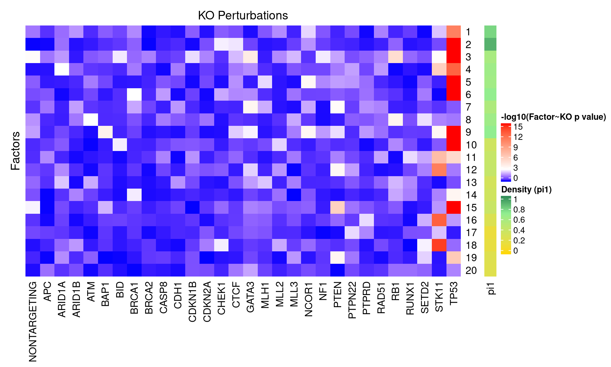
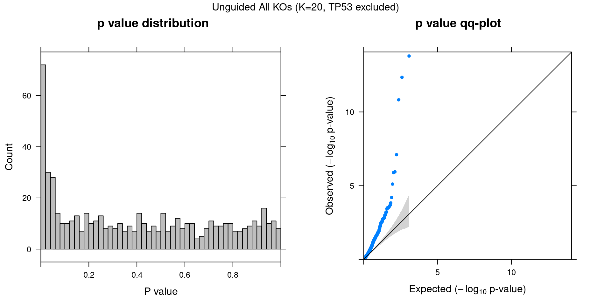

CROP-seq data are from this paper: On the design of CRISPR-based single cell molecular screens, GEO accession: GSE108699.
Perturbations:
Knock-outs of 29 tumor-suppressor genes (TP53, …), 1 non-targeting control.
Cells:
MCF10A cells (normal human breast epithelial cells) with exposure to a DNA damaging agent, doxorubicin.
Only cells with gRNA readout were kept, resulted in 5584 cells.
Genes:
Only genes detected in > 5% of cells were kept, resulted in 9895 genes.
Normalization:
Seurat “LogNormalize”: log(count per 10K + 1).
Library size was regressed out, and the residuals were used as input.
Unguided sparse factor analysis, with \(G\) being 0s.


Genes w/ non-zero loadings vs all genes selected for factor analysis.
GO category: Biological Process.
GO terms that passed overrpresentation analysis fold change \(\geq\) 2 and q value \(<\) 0.05:
| ID | Description | GeneRatio | BgRatio | FoldChange | qvalue |
|---|---|---|---|---|---|
| GO:0031581 | hemidesmosome assembly | 12/4180 | 12/8563 | 2.05 | 0.0128 |
| GO:0031639 | plasminogen activation | 12/4180 | 12/8563 | 2.05 | 0.0128 |
| GO:0042744 | hydrogen peroxide catabolic process | 12/4180 | 12/8563 | 2.05 | 0.0128 |
| GO:0019883 | antigen processing and presentation of endogenous antigen | 10/4180 | 10/8563 | 2.05 | 0.0354 |
| ID | Description | GeneRatio | BgRatio | FoldChange | qvalue |
|---|---|---|---|---|---|
| GO:0043062 | extracellular structure organization | 95/2395 | 163/8563 | 2.08 | 1.15e-12 |
| GO:0030198 | extracellular matrix organization | 84/2395 | 141/8563 | 2.13 | 5.25e-12 |
| GO:0006613 | cotranslational protein targeting to membrane | 64/2395 | 98/8563 | 2.33 | 1.51e-11 |
| GO:0006614 | SRP-dependent cotranslational protein targeting to membrane | 62/2395 | 94/8563 | 2.36 | 1.51e-11 |
| GO:0045047 | protein targeting to ER | 65/2395 | 106/8563 | 2.19 | 3.32e-10 |
| GO:0009913 | epidermal cell differentiation | 68/2395 | 114/8563 | 2.13 | 5.57e-10 |
| GO:0072599 | establishment of protein localization to endoplasmic reticulum | 65/2395 | 109/8563 | 2.13 | 1.50e-09 |
| GO:0030216 | keratinocyte differentiation | 58/2395 | 93/8563 | 2.23 | 1.50e-09 |
| GO:0031424 | keratinization | 33/2395 | 44/8563 | 2.68 | 3.50e-08 |
| GO:0070268 | cornification | 26/2395 | 34/8563 | 2.73 | 1.23e-06 |
| GO:0007229 | integrin-mediated signaling pathway | 32/2395 | 50/8563 | 2.29 | 1.68e-05 |
| GO:0018149 | peptide cross-linking | 15/2395 | 18/8563 | 2.98 | 1.37e-04 |
| GO:0030048 | actin filament-based movement | 32/2395 | 55/8563 | 2.08 | 1.91e-04 |
| GO:0070252 | actin-mediated cell contraction | 25/2395 | 39/8563 | 2.29 | 1.91e-04 |
| GO:0031581 | hemidesmosome assembly | 11/2395 | 12/8563 | 3.28 | 4.57e-04 |
| GO:0007156 | homophilic cell adhesion via plasma membrane adhesion molecules | 24/2395 | 41/8563 | 2.09 | 1.59e-03 |
| GO:0086003 | cardiac muscle cell contraction | 15/2395 | 21/8563 | 2.55 | 1.72e-03 |
| GO:0042744 | hydrogen peroxide catabolic process | 10/2395 | 12/8563 | 2.98 | 3.65e-03 |
| GO:0032330 | regulation of chondrocyte differentiation | 14/2395 | 20/8563 | 2.50 | 3.73e-03 |
| GO:1903115 | regulation of actin filament-based movement | 14/2395 | 20/8563 | 2.50 | 3.73e-03 |
| GO:0086002 | cardiac muscle cell action potential involved in contraction | 12/2395 | 16/8563 | 2.68 | 4.10e-03 |
| GO:0034109 | homotypic cell-cell adhesion | 23/2395 | 41/8563 | 2.01 | 4.38e-03 |
| GO:0033627 | cell adhesion mediated by integrin | 19/2395 | 32/8563 | 2.12 | 5.74e-03 |
| GO:0034113 | heterotypic cell-cell adhesion | 15/2395 | 23/8563 | 2.33 | 6.31e-03 |
| GO:0086004 | regulation of cardiac muscle cell contraction | 13/2395 | 19/8563 | 2.45 | 7.72e-03 |
| GO:2000209 | regulation of anoikis | 12/2395 | 17/8563 | 2.52 | 8.20e-03 |
| GO:2000811 | negative regulation of anoikis | 9/2395 | 11/8563 | 2.93 | 8.23e-03 |
| GO:1903427 | negative regulation of reactive oxygen species biosynthetic process | 11/2395 | 15/8563 | 2.62 | 8.55e-03 |
| GO:0086005 | ventricular cardiac muscle cell action potential | 10/2395 | 13/8563 | 2.75 | 8.55e-03 |
| GO:0017001 | antibiotic catabolic process | 16/2395 | 26/8563 | 2.20 | 8.55e-03 |
| GO:0061035 | regulation of cartilage development | 16/2395 | 26/8563 | 2.20 | 8.55e-03 |
| GO:0042743 | hydrogen peroxide metabolic process | 15/2395 | 24/8563 | 2.23 | 9.74e-03 |
| GO:0048701 | embryonic cranial skeleton morphogenesis | 15/2395 | 24/8563 | 2.23 | 9.74e-03 |
| GO:1900408 | negative regulation of cellular response to oxidative stress | 18/2395 | 32/8563 | 2.01 | 1.43e-02 |
| GO:1902883 | negative regulation of response to oxidative stress | 18/2395 | 32/8563 | 2.01 | 1.43e-02 |
| GO:1903202 | negative regulation of oxidative stress-induced cell death | 18/2395 | 32/8563 | 2.01 | 1.43e-02 |
| GO:0046688 | response to copper ion | 15/2395 | 25/8563 | 2.15 | 1.54e-02 |
| GO:0051187 | cofactor catabolic process | 15/2395 | 25/8563 | 2.15 | 1.54e-02 |
| GO:0046676 | negative regulation of insulin secretion | 11/2395 | 16/8563 | 2.46 | 1.57e-02 |
| GO:0033688 | regulation of osteoblast proliferation | 8/2395 | 10/8563 | 2.86 | 1.71e-02 |
| GO:0045932 | negative regulation of muscle contraction | 8/2395 | 10/8563 | 2.86 | 1.71e-02 |
| GO:0048569 | post-embryonic animal organ development | 8/2395 | 10/8563 | 2.86 | 1.71e-02 |
| GO:0061684 | chaperone-mediated autophagy | 8/2395 | 10/8563 | 2.86 | 1.71e-02 |
| GO:0098911 | regulation of ventricular cardiac muscle cell action potential | 8/2395 | 10/8563 | 2.86 | 1.71e-02 |
| GO:0035987 | endodermal cell differentiation | 14/2395 | 23/8563 | 2.18 | 1.71e-02 |
| GO:0061098 | positive regulation of protein tyrosine kinase activity | 14/2395 | 23/8563 | 2.18 | 1.71e-02 |
| GO:1902175 | regulation of oxidative stress-induced intrinsic apoptotic signaling pathway | 14/2395 | 23/8563 | 2.18 | 1.71e-02 |
| GO:1902253 | regulation of intrinsic apoptotic signaling pathway by p53 class mediator | 14/2395 | 23/8563 | 2.18 | 1.71e-02 |
| GO:0001844 | protein insertion into mitochondrial membrane involved in apoptotic signaling pathway | 13/2395 | 21/8563 | 2.21 | 1.97e-02 |
| GO:0015985 | energy coupled proton transport, down electrochemical gradient | 13/2395 | 21/8563 | 2.21 | 1.97e-02 |
| GO:0015986 | ATP synthesis coupled proton transport | 13/2395 | 21/8563 | 2.21 | 1.97e-02 |
| GO:1900739 | regulation of protein insertion into mitochondrial membrane involved in apoptotic signaling pathway | 12/2395 | 19/8563 | 2.26 | 2.24e-02 |
| GO:1900740 | positive regulation of protein insertion into mitochondrial membrane involved in apoptotic signaling pathway | 12/2395 | 19/8563 | 2.26 | 2.24e-02 |
| GO:0042776 | mitochondrial ATP synthesis coupled proton transport | 11/2395 | 17/8563 | 2.31 | 2.60e-02 |
| GO:0090278 | negative regulation of peptide hormone secretion | 11/2395 | 17/8563 | 2.31 | 2.60e-02 |
| GO:0001706 | endoderm formation | 14/2395 | 24/8563 | 2.09 | 2.60e-02 |
| GO:0003044 | regulation of systemic arterial blood pressure mediated by a chemical signal | 10/2395 | 15/8563 | 2.38 | 2.89e-02 |
| GO:0006953 | acute-phase response | 9/2395 | 13/8563 | 2.48 | 3.21e-02 |
| GO:1903541 | regulation of exosomal secretion | 9/2395 | 13/8563 | 2.48 | 3.21e-02 |
| GO:1903543 | positive regulation of exosomal secretion | 9/2395 | 13/8563 | 2.48 | 3.21e-02 |
| GO:1904385 | cellular response to angiotensin | 9/2395 | 13/8563 | 2.48 | 3.21e-02 |
| GO:0033687 | osteoblast proliferation | 8/2395 | 11/8563 | 2.60 | 3.48e-02 |
| GO:0045662 | negative regulation of myoblast differentiation | 8/2395 | 11/8563 | 2.60 | 3.48e-02 |
| GO:0015949 | nucleobase-containing small molecule interconversion | 12/2395 | 20/8563 | 2.15 | 3.54e-02 |
| GO:0071634 | regulation of transforming growth factor beta production | 11/2395 | 18/8563 | 2.18 | 4.19e-02 |
| GO:0043276 | anoikis | 13/2395 | 23/8563 | 2.02 | 4.44e-02 |
| GO:0050918 | positive chemotaxis | 13/2395 | 23/8563 | 2.02 | 4.44e-02 |
| GO:0090049 | regulation of cell migration involved in sprouting angiogenesis | 13/2395 | 23/8563 | 2.02 | 4.44e-02 |
| GO:1903524 | positive regulation of blood circulation | 13/2395 | 23/8563 | 2.02 | 4.44e-02 |
| GO:0003382 | epithelial cell morphogenesis | 10/2395 | 16/8563 | 2.23 | 4.78e-02 |
| GO:0006940 | regulation of smooth muscle contraction | 10/2395 | 16/8563 | 2.23 | 4.78e-02 |
| GO:0097734 | extracellular exosome biogenesis | 10/2395 | 16/8563 | 2.23 | 4.78e-02 |
| GO:1990182 | exosomal secretion | 10/2395 | 16/8563 | 2.23 | 4.78e-02 |
| GO:2001024 | negative regulation of response to drug | 10/2395 | 16/8563 | 2.23 | 4.78e-02 |
| ID | Description | GeneRatio | BgRatio | FoldChange | qvalue |
|---|---|---|---|---|---|
| GO:0031424 | keratinization | 29/2757 | 44/8563 | 2.05 | 0.000309 |
| GO:0071800 | podosome assembly | 12/2757 | 13/8563 | 2.87 | 0.000648 |
| GO:0000028 | ribosomal small subunit assembly | 13/2757 | 15/8563 | 2.69 | 0.001014 |
| GO:0031581 | hemidesmosome assembly | 11/2757 | 12/8563 | 2.85 | 0.001443 |
| GO:0019730 | antimicrobial humoral response | 17/2757 | 23/8563 | 2.30 | 0.002037 |
| GO:0010954 | positive regulation of protein processing | 12/2757 | 14/8563 | 2.66 | 0.002173 |
| GO:0070268 | cornification | 22/2757 | 34/8563 | 2.01 | 0.003638 |
| GO:0030239 | myofibril assembly | 16/2757 | 22/8563 | 2.26 | 0.003909 |
| GO:0019471 | 4-hydroxyproline metabolic process | 11/2757 | 13/8563 | 2.63 | 0.004943 |
| GO:1903319 | positive regulation of protein maturation | 12/2757 | 15/8563 | 2.48 | 0.005892 |
| GO:0030593 | neutrophil chemotaxis | 16/2757 | 23/8563 | 2.16 | 0.007177 |
| GO:0060841 | venous blood vessel development | 9/2757 | 10/8563 | 2.80 | 0.007177 |
| GO:0071801 | regulation of podosome assembly | 9/2757 | 10/8563 | 2.80 | 0.007177 |
| GO:0006122 | mitochondrial electron transport, ubiquinol to cytochrome c | 10/2757 | 12/8563 | 2.59 | 0.009671 |
| GO:0006595 | polyamine metabolic process | 10/2757 | 12/8563 | 2.59 | 0.009671 |
| GO:0045214 | sarcomere organization | 11/2757 | 14/8563 | 2.44 | 0.011394 |
| GO:0014014 | negative regulation of gliogenesis | 12/2757 | 16/8563 | 2.33 | 0.012289 |
| GO:0061844 | antimicrobial humoral immune response mediated by antimicrobial peptide | 12/2757 | 16/8563 | 2.33 | 0.012289 |
| GO:0030049 | muscle filament sliding | 9/2757 | 11/8563 | 2.54 | 0.019648 |
| GO:0033275 | actin-myosin filament sliding | 9/2757 | 11/8563 | 2.54 | 0.019648 |
| GO:0018126 | protein hydroxylation | 14/2757 | 21/8563 | 2.07 | 0.022934 |
| GO:0003215 | cardiac right ventricle morphogenesis | 8/2757 | 10/8563 | 2.48 | 0.039584 |
| GO:0006596 | polyamine biosynthetic process | 8/2757 | 10/8563 | 2.48 | 0.039584 |
| GO:0009309 | amine biosynthetic process | 8/2757 | 10/8563 | 2.48 | 0.039584 |
| GO:0032689 | negative regulation of interferon-gamma production | 8/2757 | 10/8563 | 2.48 | 0.039584 |
| GO:0042401 | cellular biogenic amine biosynthetic process | 8/2757 | 10/8563 | 2.48 | 0.039584 |
| GO:0061684 | chaperone-mediated autophagy | 8/2757 | 10/8563 | 2.48 | 0.039584 |
| GO:0005980 | glycogen catabolic process | 9/2757 | 12/8563 | 2.33 | 0.041906 |
| GO:0009251 | glucan catabolic process | 9/2757 | 12/8563 | 2.33 | 0.041906 |
| GO:0030574 | collagen catabolic process | 9/2757 | 12/8563 | 2.33 | 0.041906 |
| GO:0032703 | negative regulation of interleukin-2 production | 9/2757 | 12/8563 | 2.33 | 0.041906 |
| GO:0006940 | regulation of smooth muscle contraction | 11/2757 | 16/8563 | 2.14 | 0.041906 |
| GO:0048713 | regulation of oligodendrocyte differentiation | 11/2757 | 16/8563 | 2.14 | 0.041906 |
| GO:0071526 | semaphorin-plexin signaling pathway | 11/2757 | 16/8563 | 2.14 | 0.041906 |
| GO:0033238 | regulation of cellular amine metabolic process | 10/2757 | 14/8563 | 2.22 | 0.042170 |
| ID | Description | GeneRatio | BgRatio | FoldChange | qvalue |
|---|---|---|---|---|---|
| GO:0034109 | homotypic cell-cell adhesion | 30/2870 | 41/8563 | 2.18 | 2.12e-05 |
| GO:0007157 | heterophilic cell-cell adhesion via plasma membrane cell adhesion molecules | 12/2870 | 12/8563 | 2.98 | 1.45e-04 |
| GO:0007156 | homophilic cell adhesion via plasma membrane adhesion molecules | 28/2870 | 41/8563 | 2.04 | 3.25e-04 |
| GO:0070527 | platelet aggregation | 21/2870 | 30/8563 | 2.09 | 2.05e-03 |
| GO:0033627 | cell adhesion mediated by integrin | 22/2870 | 32/8563 | 2.05 | 2.05e-03 |
| GO:0042776 | mitochondrial ATP synthesis coupled proton transport | 14/2870 | 17/8563 | 2.46 | 2.07e-03 |
| GO:0015985 | energy coupled proton transport, down electrochemical gradient | 16/2870 | 21/8563 | 2.27 | 2.90e-03 |
| GO:0015986 | ATP synthesis coupled proton transport | 16/2870 | 21/8563 | 2.27 | 2.90e-03 |
| GO:0030049 | muscle filament sliding | 10/2870 | 11/8563 | 2.71 | 4.23e-03 |
| GO:0033275 | actin-myosin filament sliding | 10/2870 | 11/8563 | 2.71 | 4.23e-03 |
| GO:0006465 | signal peptide processing | 9/2870 | 10/8563 | 2.69 | 9.41e-03 |
| GO:0050982 | detection of mechanical stimulus | 9/2870 | 10/8563 | 2.69 | 9.41e-03 |
| GO:0034113 | heterotypic cell-cell adhesion | 16/2870 | 23/8563 | 2.08 | 1.03e-02 |
| GO:0014912 | negative regulation of smooth muscle cell migration | 10/2870 | 12/8563 | 2.49 | 1.25e-02 |
| GO:0045214 | sarcomere organization | 11/2870 | 14/8563 | 2.34 | 1.44e-02 |
| GO:1902043 | positive regulation of extrinsic apoptotic signaling pathway via death domain receptors | 11/2870 | 14/8563 | 2.34 | 1.44e-02 |
| GO:0006940 | regulation of smooth muscle contraction | 12/2870 | 16/8563 | 2.24 | 1.57e-02 |
| GO:0048662 | negative regulation of smooth muscle cell proliferation | 14/2870 | 20/8563 | 2.09 | 1.72e-02 |
| GO:0070232 | regulation of T cell apoptotic process | 9/2870 | 11/8563 | 2.44 | 2.26e-02 |
| GO:2000811 | negative regulation of anoikis | 9/2870 | 11/8563 | 2.44 | 2.26e-02 |
| GO:0071709 | membrane assembly | 10/2870 | 13/8563 | 2.30 | 2.58e-02 |
| GO:0003044 | regulation of systemic arterial blood pressure mediated by a chemical signal | 11/2870 | 15/8563 | 2.19 | 2.75e-02 |
| GO:0019369 | arachidonic acid metabolic process | 11/2870 | 15/8563 | 2.19 | 2.75e-02 |
| GO:0045124 | regulation of bone resorption | 11/2870 | 15/8563 | 2.19 | 2.75e-02 |
| GO:0046850 | regulation of bone remodeling | 12/2870 | 17/8563 | 2.11 | 2.79e-02 |
| GO:0030195 | negative regulation of blood coagulation | 13/2870 | 19/8563 | 2.04 | 2.79e-02 |
| GO:1900047 | negative regulation of hemostasis | 13/2870 | 19/8563 | 2.04 | 2.79e-02 |
| GO:0001990 | regulation of systemic arterial blood pressure by hormone | 8/2870 | 10/8563 | 2.39 | 4.31e-02 |
| GO:0010863 | positive regulation of phospholipase C activity | 9/2870 | 12/8563 | 2.24 | 4.69e-02 |
| GO:0031639 | plasminogen activation | 9/2870 | 12/8563 | 2.24 | 4.69e-02 |
| GO:0035338 | long-chain fatty-acyl-CoA biosynthetic process | 9/2870 | 12/8563 | 2.24 | 4.69e-02 |
| GO:0045123 | cellular extravasation | 10/2870 | 14/8563 | 2.13 | 4.79e-02 |
| GO:0090201 | negative regulation of release of cytochrome c from mitochondria | 10/2870 | 14/8563 | 2.13 | 4.79e-02 |
| ID | Description | GeneRatio | BgRatio | FoldChange | qvalue |
|---|---|---|---|---|---|
| GO:0006614 | SRP-dependent cotranslational protein targeting to membrane | 67/2057 | 94/8563 | 2.97 | 1.31e-18 |
| GO:0006613 | cotranslational protein targeting to membrane | 68/2057 | 98/8563 | 2.89 | 3.66e-18 |
| GO:0045047 | protein targeting to ER | 70/2057 | 106/8563 | 2.75 | 4.98e-17 |
| GO:0072599 | establishment of protein localization to endoplasmic reticulum | 71/2057 | 109/8563 | 2.71 | 6.53e-17 |
| GO:0000184 | nuclear-transcribed mRNA catabolic process, nonsense-mediated decay | 72/2057 | 115/8563 | 2.61 | 8.02e-16 |
| GO:0070972 | protein localization to endoplasmic reticulum | 76/2057 | 128/8563 | 2.47 | 6.06e-15 |
| GO:0006413 | translational initiation | 91/2057 | 174/8563 | 2.18 | 2.45e-13 |
| GO:0006612 | protein targeting to membrane | 77/2057 | 154/8563 | 2.08 | 8.63e-10 |
| GO:0002181 | cytoplasmic translation | 39/2057 | 79/8563 | 2.06 | 9.87e-05 |
| GO:0006749 | glutathione metabolic process | 18/2057 | 27/8563 | 2.78 | 3.48e-04 |
| GO:0006937 | regulation of muscle contraction | 31/2057 | 60/8563 | 2.15 | 3.48e-04 |
| GO:0031581 | hemidesmosome assembly | 10/2057 | 12/8563 | 3.47 | 2.40e-03 |
| GO:0045933 | positive regulation of muscle contraction | 12/2057 | 17/8563 | 2.94 | 5.08e-03 |
| GO:2001244 | positive regulation of intrinsic apoptotic signaling pathway | 21/2057 | 42/8563 | 2.08 | 1.33e-02 |
| GO:0000028 | ribosomal small subunit assembly | 10/2057 | 15/8563 | 2.78 | 2.66e-02 |
| GO:0050829 | defense response to Gram-negative bacterium | 10/2057 | 15/8563 | 2.78 | 2.66e-02 |
| GO:0046688 | response to copper ion | 14/2057 | 25/8563 | 2.33 | 2.72e-02 |
| GO:0002026 | regulation of the force of heart contraction | 9/2057 | 13/8563 | 2.88 | 3.19e-02 |
| GO:1903524 | positive regulation of blood circulation | 13/2057 | 23/8563 | 2.35 | 3.43e-02 |
| GO:0030049 | muscle filament sliding | 8/2057 | 11/8563 | 3.03 | 3.54e-02 |
| GO:0033275 | actin-myosin filament sliding | 8/2057 | 11/8563 | 3.03 | 3.54e-02 |
| GO:0061082 | myeloid leukocyte cytokine production | 8/2057 | 11/8563 | 3.03 | 3.54e-02 |
| GO:0006940 | regulation of smooth muscle contraction | 10/2057 | 16/8563 | 2.60 | 4.08e-02 |
| GO:0032732 | positive regulation of interleukin-1 production | 10/2057 | 16/8563 | 2.60 | 4.08e-02 |
| GO:0045823 | positive regulation of heart contraction | 10/2057 | 16/8563 | 2.60 | 4.08e-02 |
| GO:0035722 | interleukin-12-mediated signaling pathway | 16/2057 | 32/8563 | 2.08 | 4.28e-02 |
| GO:0070671 | response to interleukin-12 | 17/2057 | 35/8563 | 2.02 | 4.45e-02 |
| GO:0008210 | estrogen metabolic process | 9/2057 | 14/8563 | 2.68 | 4.77e-02 |
| GO:0032731 | positive regulation of interleukin-1 beta production | 9/2057 | 14/8563 | 2.68 | 4.77e-02 |
| GO:0071450 | cellular response to oxygen radical | 9/2057 | 14/8563 | 2.68 | 4.77e-02 |
| GO:0071451 | cellular response to superoxide | 9/2057 | 14/8563 | 2.68 | 4.77e-02 |
| GO:0006882 | cellular zinc ion homeostasis | 11/2057 | 19/8563 | 2.41 | 4.77e-02 |
| GO:0055069 | zinc ion homeostasis | 11/2057 | 19/8563 | 2.41 | 4.77e-02 |
| ID | Description | GeneRatio | BgRatio | FoldChange | qvalue |
|---|---|---|---|---|---|
| GO:0006614 | SRP-dependent cotranslational protein targeting to membrane | 75/2361 | 94/8563 | 2.89 | 2.00e-22 |
| GO:0006413 | translational initiation | 113/2361 | 174/8563 | 2.36 | 7.35e-22 |
| GO:0006613 | cotranslational protein targeting to membrane | 76/2361 | 98/8563 | 2.81 | 8.79e-22 |
| GO:0045047 | protein targeting to ER | 78/2361 | 106/8563 | 2.67 | 5.59e-20 |
| GO:0072599 | establishment of protein localization to endoplasmic reticulum | 78/2361 | 109/8563 | 2.60 | 8.25e-19 |
| GO:0006119 | oxidative phosphorylation | 77/2361 | 112/8563 | 2.49 | 6.28e-17 |
| GO:0070972 | protein localization to endoplasmic reticulum | 84/2361 | 128/8563 | 2.38 | 1.14e-16 |
| GO:0000184 | nuclear-transcribed mRNA catabolic process, nonsense-mediated decay | 77/2361 | 115/8563 | 2.43 | 5.45e-16 |
| GO:0046034 | ATP metabolic process | 106/2361 | 188/8563 | 2.04 | 1.99e-14 |
| GO:0022900 | electron transport chain | 87/2361 | 143/8563 | 2.21 | 2.03e-14 |
| GO:0042773 | ATP synthesis coupled electron transport | 58/2361 | 80/8563 | 2.63 | 2.27e-14 |
| GO:0042775 | mitochondrial ATP synthesis coupled electron transport | 57/2361 | 79/8563 | 2.62 | 5.61e-14 |
| GO:0045333 | cellular respiration | 88/2361 | 151/8563 | 2.11 | 3.70e-13 |
| GO:0022904 | respiratory electron transport chain | 62/2361 | 93/8563 | 2.42 | 7.44e-13 |
| GO:0006612 | protein targeting to membrane | 87/2361 | 154/8563 | 2.05 | 4.84e-12 |
| GO:0033108 | mitochondrial respiratory chain complex assembly | 61/2361 | 95/8563 | 2.33 | 1.29e-11 |
| GO:0006414 | translational elongation | 71/2361 | 121/8563 | 2.13 | 7.99e-11 |
| GO:0010257 | NADH dehydrogenase complex assembly | 45/2361 | 64/8563 | 2.55 | 1.73e-10 |
| GO:0032981 | mitochondrial respiratory chain complex I assembly | 45/2361 | 64/8563 | 2.55 | 1.73e-10 |
| GO:0032543 | mitochondrial translation | 74/2361 | 130/8563 | 2.06 | 1.95e-10 |
| GO:0070125 | mitochondrial translational elongation | 54/2361 | 84/8563 | 2.33 | 2.66e-10 |
| GO:0006120 | mitochondrial electron transport, NADH to ubiquinone | 36/2361 | 47/8563 | 2.78 | 4.56e-10 |
| GO:0002181 | cytoplasmic translation | 51/2361 | 79/8563 | 2.34 | 7.93e-10 |
| GO:0070126 | mitochondrial translational termination | 52/2361 | 85/8563 | 2.22 | 7.94e-09 |
| GO:0006415 | translational termination | 56/2361 | 96/8563 | 2.12 | 1.91e-08 |
| GO:0009060 | aerobic respiration | 39/2361 | 67/8563 | 2.11 | 9.42e-06 |
| GO:0015985 | energy coupled proton transport, down electrochemical gradient | 16/2361 | 21/8563 | 2.76 | 2.92e-04 |
| GO:0015986 | ATP synthesis coupled proton transport | 16/2361 | 21/8563 | 2.76 | 2.92e-04 |
| GO:0001732 | formation of cytoplasmic translation initiation complex | 11/2361 | 12/8563 | 3.32 | 3.60e-04 |
| GO:0007339 | binding of sperm to zona pellucida | 12/2361 | 14/8563 | 3.11 | 5.31e-04 |
| GO:0099132 | ATP hydrolysis coupled cation transmembrane transport | 22/2361 | 36/8563 | 2.22 | 1.29e-03 |
| GO:0007338 | single fertilization | 26/2361 | 46/8563 | 2.05 | 1.65e-03 |
| GO:0042776 | mitochondrial ATP synthesis coupled proton transport | 13/2361 | 17/8563 | 2.77 | 1.85e-03 |
| GO:0035036 | sperm-egg recognition | 13/2361 | 18/8563 | 2.62 | 4.48e-03 |
| GO:0002183 | cytoplasmic translational initiation | 17/2361 | 27/8563 | 2.28 | 5.34e-03 |
| GO:0006458 | ‘de novo’ protein folding | 19/2361 | 32/8563 | 2.15 | 6.43e-03 |
| GO:0042407 | cristae formation | 19/2361 | 32/8563 | 2.15 | 6.43e-03 |
| GO:0002673 | regulation of acute inflammatory response | 15/2361 | 23/8563 | 2.37 | 7.25e-03 |
| GO:0006123 | mitochondrial electron transport, cytochrome c to oxygen | 9/2361 | 11/8563 | 2.97 | 1.06e-02 |
| GO:0019646 | aerobic electron transport chain | 9/2361 | 11/8563 | 2.97 | 1.06e-02 |
| GO:0070203 | regulation of establishment of protein localization to telomere | 9/2361 | 11/8563 | 2.97 | 1.06e-02 |
| GO:1904874 | positive regulation of telomerase RNA localization to Cajal body | 11/2361 | 15/8563 | 2.66 | 1.09e-02 |
| GO:0009988 | cell-cell recognition | 15/2361 | 24/8563 | 2.27 | 1.30e-02 |
| GO:0017004 | cytochrome complex assembly | 18/2361 | 32/8563 | 2.04 | 1.92e-02 |
| GO:1904872 | regulation of telomerase RNA localization to Cajal body | 12/2361 | 18/8563 | 2.42 | 1.98e-02 |
| GO:0061844 | antimicrobial humoral immune response mediated by antimicrobial peptide | 11/2361 | 16/8563 | 2.49 | 2.27e-02 |
| GO:1904814 | regulation of protein localization to chromosome, telomeric region | 10/2361 | 14/8563 | 2.59 | 2.50e-02 |
| GO:0019730 | antimicrobial humoral response | 14/2361 | 23/8563 | 2.21 | 2.50e-02 |
| GO:1900409 | positive regulation of cellular response to oxidative stress | 8/2361 | 10/8563 | 2.90 | 2.50e-02 |
| GO:1903209 | positive regulation of oxidative stress-induced cell death | 8/2361 | 10/8563 | 2.90 | 2.50e-02 |
| GO:1903405 | protein localization to nuclear body | 8/2361 | 10/8563 | 2.90 | 2.50e-02 |
| GO:1904851 | positive regulation of establishment of protein localization to telomere | 8/2361 | 10/8563 | 2.90 | 2.50e-02 |
| GO:1904867 | protein localization to Cajal body | 8/2361 | 10/8563 | 2.90 | 2.50e-02 |
| GO:0006122 | mitochondrial electron transport, ubiquinol to cytochrome c | 9/2361 | 12/8563 | 2.72 | 2.50e-02 |
| GO:0070202 | regulation of establishment of protein localization to chromosome | 9/2361 | 12/8563 | 2.72 | 2.50e-02 |
| GO:1904816 | positive regulation of protein localization to chromosome, telomeric region | 9/2361 | 12/8563 | 2.72 | 2.50e-02 |
| GO:1990173 | protein localization to nucleoplasm | 9/2361 | 12/8563 | 2.72 | 2.50e-02 |
| GO:0051084 | ‘de novo’ posttranslational protein folding | 16/2361 | 28/8563 | 2.07 | 2.69e-02 |
| GO:0090670 | RNA localization to Cajal body | 12/2361 | 19/8563 | 2.29 | 3.45e-02 |
| GO:0090671 | telomerase RNA localization to Cajal body | 12/2361 | 19/8563 | 2.29 | 3.45e-02 |
| GO:0090672 | telomerase RNA localization | 12/2361 | 19/8563 | 2.29 | 3.45e-02 |
| GO:0090685 | RNA localization to nucleus | 12/2361 | 19/8563 | 2.29 | 3.45e-02 |
| GO:0000028 | ribosomal small subunit assembly | 10/2361 | 15/8563 | 2.42 | 4.80e-02 |
| GO:0060628 | regulation of ER to Golgi vesicle-mediated transport | 10/2361 | 15/8563 | 2.42 | 4.80e-02 |
| ID | Description | GeneRatio | BgRatio | FoldChange | qvalue |
|---|---|---|---|---|---|
| GO:0006613 | cotranslational protein targeting to membrane | 63/2584 | 98/8563 | 2.13 | 6.37e-09 |
| GO:0006614 | SRP-dependent cotranslational protein targeting to membrane | 61/2584 | 94/8563 | 2.15 | 6.37e-09 |
| GO:0045047 | protein targeting to ER | 66/2584 | 106/8563 | 2.06 | 9.08e-09 |
| GO:0072599 | establishment of protein localization to endoplasmic reticulum | 67/2584 | 109/8563 | 2.04 | 1.10e-08 |
| GO:0035767 | endothelial cell chemotaxis | 12/2584 | 15/8563 | 2.65 | 4.93e-03 |
| GO:0019730 | antimicrobial humoral response | 16/2584 | 23/8563 | 2.31 | 5.46e-03 |
| GO:0061844 | antimicrobial humoral immune response mediated by antimicrobial peptide | 12/2584 | 16/8563 | 2.49 | 1.20e-02 |
| GO:0090200 | positive regulation of release of cytochrome c from mitochondria | 14/2584 | 21/8563 | 2.21 | 2.03e-02 |
| GO:0006123 | mitochondrial electron transport, cytochrome c to oxygen | 9/2584 | 11/8563 | 2.71 | 2.03e-02 |
| GO:0019646 | aerobic electron transport chain | 9/2584 | 11/8563 | 2.71 | 2.03e-02 |
| GO:0002026 | regulation of the force of heart contraction | 10/2584 | 13/8563 | 2.55 | 2.26e-02 |
| GO:0000028 | ribosomal small subunit assembly | 11/2584 | 15/8563 | 2.43 | 2.31e-02 |
| GO:0018149 | peptide cross-linking | 12/2584 | 18/8563 | 2.21 | 4.08e-02 |
| GO:0050655 | dermatan sulfate proteoglycan metabolic process | 8/2584 | 10/8563 | 2.65 | 4.27e-02 |
| GO:0085029 | extracellular matrix assembly | 8/2584 | 10/8563 | 2.65 | 4.27e-02 |
| GO:0000715 | nucleotide-excision repair, DNA damage recognition | 14/2584 | 23/8563 | 2.02 | 4.94e-02 |
| GO:0030593 | neutrophil chemotaxis | 14/2584 | 23/8563 | 2.02 | 4.94e-02 |
| GO:0050918 | positive chemotaxis | 14/2584 | 23/8563 | 2.02 | 4.94e-02 |
| ID | Description | GeneRatio | BgRatio | FoldChange | qvalue |
|---|---|---|---|---|---|
| GO:0030855 | epithelial cell differentiation | 122/1706 | 305/8563 | 2.01 | 1.57e-13 |
| GO:0007015 | actin filament organization | 96/1706 | 225/8563 | 2.14 | 1.61e-12 |
| GO:0034330 | cell junction organization | 78/1706 | 178/8563 | 2.20 | 1.09e-10 |
| GO:0031589 | cell-substrate adhesion | 76/1706 | 174/8563 | 2.19 | 2.01e-10 |
| GO:0030198 | extracellular matrix organization | 64/1706 | 141/8563 | 2.28 | 1.30e-09 |
| GO:0032970 | regulation of actin filament-based process | 84/1706 | 210/8563 | 2.01 | 2.46e-09 |
| GO:0070972 | protein localization to endoplasmic reticulum | 59/1706 | 128/8563 | 2.31 | 3.30e-09 |
| GO:0043062 | extracellular structure organization | 69/1706 | 163/8563 | 2.12 | 7.74e-09 |
| GO:0034329 | cell junction assembly | 64/1706 | 148/8563 | 2.17 | 1.19e-08 |
| GO:0006613 | cotranslational protein targeting to membrane | 48/1706 | 98/8563 | 2.46 | 1.39e-08 |
| GO:0051017 | actin filament bundle assembly | 46/1706 | 92/8563 | 2.51 | 1.39e-08 |
| GO:0061572 | actin filament bundle organization | 46/1706 | 93/8563 | 2.48 | 2.13e-08 |
| GO:0070268 | cornification | 24/1706 | 34/8563 | 3.54 | 2.99e-08 |
| GO:0006614 | SRP-dependent cotranslational protein targeting to membrane | 46/1706 | 94/8563 | 2.46 | 2.99e-08 |
| GO:0043588 | skin development | 61/1706 | 144/8563 | 2.13 | 6.25e-08 |
| GO:0030216 | keratinocyte differentiation | 45/1706 | 93/8563 | 2.43 | 6.74e-08 |
| GO:0007160 | cell-matrix adhesion | 52/1706 | 115/8563 | 2.27 | 6.77e-08 |
| GO:0008544 | epidermis development | 69/1706 | 172/8563 | 2.01 | 7.38e-08 |
| GO:0003012 | muscle system process | 68/1706 | 169/8563 | 2.02 | 7.93e-08 |
| GO:0006936 | muscle contraction | 53/1706 | 121/8563 | 2.20 | 1.59e-07 |
| GO:0045047 | protein targeting to ER | 48/1706 | 106/8563 | 2.27 | 2.31e-07 |
| GO:0072599 | establishment of protein localization to endoplasmic reticulum | 48/1706 | 109/8563 | 2.21 | 6.32e-07 |
| GO:0031032 | actomyosin structure organization | 46/1706 | 103/8563 | 2.24 | 7.20e-07 |
| GO:0031424 | keratinization | 26/1706 | 44/8563 | 2.97 | 9.35e-07 |
| GO:0009913 | epidermal cell differentiation | 49/1706 | 114/8563 | 2.16 | 1.07e-06 |
| GO:0007044 | cell-substrate junction assembly | 35/1706 | 71/8563 | 2.47 | 1.69e-06 |
| GO:0010810 | regulation of cell-substrate adhesion | 49/1706 | 116/8563 | 2.12 | 1.87e-06 |
| GO:0000184 | nuclear-transcribed mRNA catabolic process, nonsense-mediated decay | 48/1706 | 115/8563 | 2.10 | 3.85e-06 |
| GO:0007229 | integrin-mediated signaling pathway | 27/1706 | 50/8563 | 2.71 | 5.18e-06 |
| GO:0046718 | viral entry into host cell | 33/1706 | 70/8563 | 2.37 | 1.29e-05 |
| GO:0030048 | actin filament-based movement | 28/1706 | 55/8563 | 2.56 | 1.39e-05 |
| GO:0070252 | actin-mediated cell contraction | 22/1706 | 39/8563 | 2.83 | 2.51e-05 |
| GO:0030260 | entry into host cell | 36/1706 | 82/8563 | 2.20 | 2.75e-05 |
| GO:0044409 | entry into host | 36/1706 | 82/8563 | 2.20 | 2.75e-05 |
| GO:0051806 | entry into cell of other organism involved in symbiotic interaction | 36/1706 | 82/8563 | 2.20 | 2.75e-05 |
| GO:0051828 | entry into other organism involved in symbiotic interaction | 36/1706 | 82/8563 | 2.20 | 2.75e-05 |
| GO:0006937 | regulation of muscle contraction | 29/1706 | 60/8563 | 2.43 | 2.88e-05 |
| GO:0003015 | heart process | 38/1706 | 91/8563 | 2.10 | 5.61e-05 |
| GO:0045216 | cell-cell junction organization | 33/1706 | 75/8563 | 2.21 | 6.57e-05 |
| GO:0010811 | positive regulation of cell-substrate adhesion | 29/1706 | 63/8563 | 2.31 | 8.80e-05 |
| GO:0008016 | regulation of heart contraction | 31/1706 | 70/8563 | 2.22 | 1.05e-04 |
| GO:0098742 | cell-cell adhesion via plasma-membrane adhesion molecules | 31/1706 | 70/8563 | 2.22 | 1.05e-04 |
| GO:0034332 | adherens junction organization | 38/1706 | 94/8563 | 2.03 | 1.26e-04 |
| GO:0031581 | hemidesmosome assembly | 10/1706 | 12/8563 | 4.18 | 1.44e-04 |
| GO:0002576 | platelet degranulation | 31/1706 | 71/8563 | 2.19 | 1.44e-04 |
| GO:0060047 | heart contraction | 35/1706 | 85/8563 | 2.07 | 1.73e-04 |
| GO:0030038 | contractile actin filament bundle assembly | 28/1706 | 62/8563 | 2.27 | 1.75e-04 |
| GO:0043149 | stress fiber assembly | 28/1706 | 62/8563 | 2.27 | 1.75e-04 |
| GO:0042445 | hormone metabolic process | 35/1706 | 86/8563 | 2.04 | 2.17e-04 |
| GO:1904018 | positive regulation of vasculature development | 35/1706 | 86/8563 | 2.04 | 2.17e-04 |
| GO:0030834 | regulation of actin filament depolymerization | 16/1706 | 27/8563 | 2.97 | 2.28e-04 |
| GO:0030239 | myofibril assembly | 14/1706 | 22/8563 | 3.19 | 2.63e-04 |
| GO:0030042 | actin filament depolymerization | 17/1706 | 30/8563 | 2.84 | 2.66e-04 |
| GO:0045766 | positive regulation of angiogenesis | 32/1706 | 77/8563 | 2.09 | 2.98e-04 |
| GO:0001952 | regulation of cell-matrix adhesion | 30/1706 | 71/8563 | 2.12 | 3.63e-04 |
| GO:0055002 | striated muscle cell development | 28/1706 | 65/8563 | 2.16 | 4.28e-04 |
| GO:0030049 | muscle filament sliding | 9/1706 | 11/8563 | 4.11 | 4.47e-04 |
| GO:0033275 | actin-myosin filament sliding | 9/1706 | 11/8563 | 4.11 | 4.47e-04 |
| GO:0051897 | positive regulation of protein kinase B signaling | 27/1706 | 62/8563 | 2.19 | 4.51e-04 |
| GO:0097529 | myeloid leukocyte migration | 27/1706 | 62/8563 | 2.19 | 4.51e-04 |
| GO:0055001 | muscle cell development | 30/1706 | 72/8563 | 2.09 | 4.51e-04 |
| GO:1903522 | regulation of blood circulation | 32/1706 | 79/8563 | 2.03 | 4.77e-04 |
| GO:0006690 | icosanoid metabolic process | 20/1706 | 41/8563 | 2.45 | 6.82e-04 |
| GO:0007156 | homophilic cell adhesion via plasma membrane adhesion molecules | 20/1706 | 41/8563 | 2.45 | 6.82e-04 |
| GO:0034333 | adherens junction assembly | 27/1706 | 64/8563 | 2.12 | 7.87e-04 |
| GO:0045214 | sarcomere organization | 10/1706 | 14/8563 | 3.59 | 8.98e-04 |
| GO:0032350 | regulation of hormone metabolic process | 12/1706 | 19/8563 | 3.17 | 9.43e-04 |
| GO:1903844 | regulation of cellular response to transforming growth factor beta stimulus | 29/1706 | 72/8563 | 2.02 | 1.10e-03 |
| GO:0007157 | heterophilic cell-cell adhesion via plasma membrane cell adhesion molecules | 9/1706 | 12/8563 | 3.76 | 1.16e-03 |
| GO:0032231 | regulation of actin filament bundle assembly | 25/1706 | 59/8563 | 2.13 | 1.27e-03 |
| GO:0045933 | positive regulation of muscle contraction | 11/1706 | 17/8563 | 3.25 | 1.33e-03 |
| GO:0007045 | cell-substrate adherens junction assembly | 24/1706 | 56/8563 | 2.15 | 1.36e-03 |
| GO:0048041 | focal adhesion assembly | 24/1706 | 56/8563 | 2.15 | 1.36e-03 |
| GO:0110110 | positive regulation of animal organ morphogenesis | 16/1706 | 31/8563 | 2.59 | 1.45e-03 |
| GO:0050921 | positive regulation of chemotaxis | 23/1706 | 53/8563 | 2.18 | 1.46e-03 |
| GO:0030856 | regulation of epithelial cell differentiation | 28/1706 | 70/8563 | 2.01 | 1.49e-03 |
| GO:1903317 | regulation of protein maturation | 21/1706 | 47/8563 | 2.24 | 1.70e-03 |
| GO:0010927 | cellular component assembly involved in morphogenesis | 20/1706 | 44/8563 | 2.28 | 1.81e-03 |
| GO:0030593 | neutrophil chemotaxis | 13/1706 | 23/8563 | 2.84 | 1.87e-03 |
| GO:1904019 | epithelial cell apoptotic process | 23/1706 | 54/8563 | 2.14 | 1.89e-03 |
| GO:0034109 | homotypic cell-cell adhesion | 19/1706 | 41/8563 | 2.33 | 1.89e-03 |
| GO:0007043 | cell-cell junction assembly | 25/1706 | 61/8563 | 2.06 | 2.02e-03 |
| GO:0001954 | positive regulation of cell-matrix adhesion | 16/1706 | 32/8563 | 2.51 | 2.06e-03 |
| GO:0045445 | myoblast differentiation | 19/1706 | 42/8563 | 2.27 | 2.57e-03 |
| GO:0006941 | striated muscle contraction | 24/1706 | 59/8563 | 2.04 | 2.81e-03 |
| GO:1903845 | negative regulation of cellular response to transforming growth factor beta stimulus | 21/1706 | 49/8563 | 2.15 | 2.89e-03 |
| GO:1990266 | neutrophil migration | 14/1706 | 27/8563 | 2.60 | 2.93e-03 |
| GO:0006939 | smooth muscle contraction | 15/1706 | 30/8563 | 2.51 | 2.93e-03 |
| GO:0090184 | positive regulation of kidney development | 8/1706 | 11/8563 | 3.65 | 3.05e-03 |
| GO:0051261 | protein depolymerization | 23/1706 | 56/8563 | 2.06 | 3.05e-03 |
| GO:0070613 | regulation of protein processing | 20/1706 | 46/8563 | 2.18 | 3.10e-03 |
| GO:0006940 | regulation of smooth muscle contraction | 10/1706 | 16/8563 | 3.14 | 3.12e-03 |
| GO:0045823 | positive regulation of heart contraction | 10/1706 | 16/8563 | 3.14 | 3.12e-03 |
| GO:0086002 | cardiac muscle cell action potential involved in contraction | 10/1706 | 16/8563 | 3.14 | 3.12e-03 |
| GO:1901879 | regulation of protein depolymerization | 19/1706 | 43/8563 | 2.22 | 3.30e-03 |
| GO:0010595 | positive regulation of endothelial cell migration | 24/1706 | 60/8563 | 2.01 | 3.46e-03 |
| GO:0043297 | apical junction assembly | 18/1706 | 40/8563 | 2.26 | 3.56e-03 |
| GO:0060048 | cardiac muscle contraction | 21/1706 | 50/8563 | 2.11 | 3.65e-03 |
| GO:1901888 | regulation of cell junction assembly | 23/1706 | 57/8563 | 2.03 | 3.83e-03 |
| GO:0055117 | regulation of cardiac muscle contraction | 16/1706 | 34/8563 | 2.36 | 3.97e-03 |
| GO:0030835 | negative regulation of actin filament depolymerization | 12/1706 | 22/8563 | 2.74 | 4.03e-03 |
| GO:0007586 | digestion | 15/1706 | 31/8563 | 2.43 | 4.13e-03 |
| GO:0022600 | digestive system process | 14/1706 | 28/8563 | 2.51 | 4.17e-03 |
| GO:0032649 | regulation of interferon-gamma production | 14/1706 | 28/8563 | 2.51 | 4.17e-03 |
| GO:0006942 | regulation of striated muscle contraction | 17/1706 | 38/8563 | 2.25 | 5.11e-03 |
| GO:0002526 | acute inflammatory response | 20/1706 | 48/8563 | 2.09 | 5.16e-03 |
| GO:0030512 | negative regulation of transforming growth factor beta receptor signaling pathway | 20/1706 | 48/8563 | 2.09 | 5.16e-03 |
| GO:1903391 | regulation of adherens junction organization | 20/1706 | 48/8563 | 2.09 | 5.16e-03 |
| GO:0032609 | interferon-gamma production | 15/1706 | 32/8563 | 2.35 | 5.71e-03 |
| GO:1901890 | positive regulation of cell junction assembly | 11/1706 | 20/8563 | 2.76 | 5.82e-03 |
| GO:0002687 | positive regulation of leukocyte migration | 21/1706 | 52/8563 | 2.03 | 5.91e-03 |
| GO:0042742 | defense response to bacterium | 21/1706 | 52/8563 | 2.03 | 5.91e-03 |
| GO:0006692 | prostanoid metabolic process | 12/1706 | 23/8563 | 2.62 | 5.93e-03 |
| GO:0006693 | prostaglandin metabolic process | 12/1706 | 23/8563 | 2.62 | 5.93e-03 |
| GO:1903053 | regulation of extracellular matrix organization | 12/1706 | 23/8563 | 2.62 | 5.93e-03 |
| GO:1903524 | positive regulation of blood circulation | 12/1706 | 23/8563 | 2.62 | 5.93e-03 |
| GO:0051893 | regulation of focal adhesion assembly | 18/1706 | 42/8563 | 2.15 | 6.05e-03 |
| GO:0090109 | regulation of cell-substrate junction assembly | 18/1706 | 42/8563 | 2.15 | 6.05e-03 |
| GO:0006959 | humoral immune response | 20/1706 | 49/8563 | 2.05 | 6.42e-03 |
| GO:0061077 | chaperone-mediated protein folding | 20/1706 | 49/8563 | 2.05 | 6.42e-03 |
| GO:1904035 | regulation of epithelial cell apoptotic process | 17/1706 | 39/8563 | 2.19 | 6.50e-03 |
| GO:0071621 | granulocyte chemotaxis | 15/1706 | 33/8563 | 2.28 | 7.45e-03 |
| GO:0032689 | negative regulation of interferon-gamma production | 7/1706 | 10/8563 | 3.51 | 7.75e-03 |
| GO:0045987 | positive regulation of smooth muscle contraction | 7/1706 | 10/8563 | 3.51 | 7.75e-03 |
| GO:0085029 | extracellular matrix assembly | 7/1706 | 10/8563 | 3.51 | 7.75e-03 |
| GO:0097284 | hepatocyte apoptotic process | 7/1706 | 10/8563 | 3.51 | 7.75e-03 |
| GO:0038084 | vascular endothelial growth factor signaling pathway | 10/1706 | 18/8563 | 2.79 | 7.98e-03 |
| GO:0044319 | wound healing, spreading of cells | 11/1706 | 21/8563 | 2.63 | 8.22e-03 |
| GO:0090505 | epiboly involved in wound healing | 11/1706 | 21/8563 | 2.63 | 8.22e-03 |
| GO:0033559 | unsaturated fatty acid metabolic process | 19/1706 | 47/8563 | 2.03 | 8.60e-03 |
| GO:2000379 | positive regulation of reactive oxygen species metabolic process | 19/1706 | 47/8563 | 2.03 | 8.60e-03 |
| GO:0002690 | positive regulation of leukocyte chemotaxis | 16/1706 | 37/8563 | 2.17 | 8.95e-03 |
| GO:0097530 | granulocyte migration | 16/1706 | 37/8563 | 2.17 | 8.95e-03 |
| GO:0048640 | negative regulation of developmental growth | 18/1706 | 44/8563 | 2.05 | 9.52e-03 |
| GO:0006953 | acute-phase response | 8/1706 | 13/8563 | 3.09 | 9.99e-03 |
| GO:0050892 | intestinal absorption | 8/1706 | 13/8563 | 3.09 | 9.99e-03 |
| GO:0051180 | vitamin transport | 8/1706 | 13/8563 | 3.09 | 9.99e-03 |
| GO:0060055 | angiogenesis involved in wound healing | 8/1706 | 13/8563 | 3.09 | 9.99e-03 |
| GO:0003208 | cardiac ventricle morphogenesis | 14/1706 | 31/8563 | 2.27 | 1.04e-02 |
| GO:0032233 | positive regulation of actin filament bundle assembly | 17/1706 | 41/8563 | 2.08 | 1.05e-02 |
| GO:0009409 | response to cold | 13/1706 | 28/8563 | 2.33 | 1.11e-02 |
| GO:0003382 | epithelial cell morphogenesis | 9/1706 | 16/8563 | 2.82 | 1.14e-02 |
| GO:0051385 | response to mineralocorticoid | 9/1706 | 16/8563 | 2.82 | 1.14e-02 |
| GO:0051894 | positive regulation of focal adhesion assembly | 9/1706 | 16/8563 | 2.82 | 1.14e-02 |
| GO:0071526 | semaphorin-plexin signaling pathway | 9/1706 | 16/8563 | 2.82 | 1.14e-02 |
| GO:0014902 | myotube differentiation | 16/1706 | 38/8563 | 2.11 | 1.15e-02 |
| GO:0090183 | regulation of kidney development | 10/1706 | 19/8563 | 2.64 | 1.18e-02 |
| GO:0060389 | pathway-restricted SMAD protein phosphorylation | 11/1706 | 22/8563 | 2.51 | 1.18e-02 |
| GO:0090504 | epiboly | 11/1706 | 22/8563 | 2.51 | 1.18e-02 |
| GO:2000351 | regulation of endothelial cell apoptotic process | 11/1706 | 22/8563 | 2.51 | 1.18e-02 |
| GO:0001892 | embryonic placenta development | 18/1706 | 45/8563 | 2.01 | 1.18e-02 |
| GO:0002688 | regulation of leukocyte chemotaxis | 18/1706 | 45/8563 | 2.01 | 1.18e-02 |
| GO:0120193 | tight junction organization | 15/1706 | 35/8563 | 2.15 | 1.26e-02 |
| GO:0032963 | collagen metabolic process | 17/1706 | 42/8563 | 2.03 | 1.33e-02 |
| GO:0050671 | positive regulation of lymphocyte proliferation | 17/1706 | 42/8563 | 2.03 | 1.33e-02 |
| GO:0061337 | cardiac conduction | 17/1706 | 42/8563 | 2.03 | 1.33e-02 |
| GO:0033627 | cell adhesion mediated by integrin | 14/1706 | 32/8563 | 2.20 | 1.38e-02 |
| GO:0033561 | regulation of water loss via skin | 7/1706 | 11/8563 | 3.19 | 1.41e-02 |
| GO:0045662 | negative regulation of myoblast differentiation | 7/1706 | 11/8563 | 3.19 | 1.41e-02 |
| GO:1900024 | regulation of substrate adhesion-dependent cell spreading | 16/1706 | 39/8563 | 2.06 | 1.47e-02 |
| GO:0001885 | endothelial cell development | 15/1706 | 36/8563 | 2.09 | 1.62e-02 |
| GO:0032602 | chemokine production | 15/1706 | 36/8563 | 2.09 | 1.62e-02 |
| GO:0043627 | response to estrogen | 15/1706 | 36/8563 | 2.09 | 1.62e-02 |
| GO:1901880 | negative regulation of protein depolymerization | 15/1706 | 36/8563 | 2.09 | 1.62e-02 |
| GO:0046885 | regulation of hormone biosynthetic process | 8/1706 | 14/8563 | 2.87 | 1.62e-02 |
| GO:1903055 | positive regulation of extracellular matrix organization | 8/1706 | 14/8563 | 2.87 | 1.62e-02 |
| GO:0019730 | antimicrobial humoral response | 11/1706 | 23/8563 | 2.40 | 1.65e-02 |
| GO:0034113 | heterotypic cell-cell adhesion | 11/1706 | 23/8563 | 2.40 | 1.65e-02 |
| GO:0050918 | positive chemotaxis | 11/1706 | 23/8563 | 2.40 | 1.65e-02 |
| GO:0001755 | neural crest cell migration | 9/1706 | 17/8563 | 2.66 | 1.69e-02 |
| GO:0010955 | negative regulation of protein processing | 10/1706 | 20/8563 | 2.51 | 1.69e-02 |
| GO:0034405 | response to fluid shear stress | 10/1706 | 20/8563 | 2.51 | 1.69e-02 |
| GO:0050819 | negative regulation of coagulation | 10/1706 | 20/8563 | 2.51 | 1.69e-02 |
| GO:0051693 | actin filament capping | 10/1706 | 20/8563 | 2.51 | 1.69e-02 |
| GO:1903318 | negative regulation of protein maturation | 10/1706 | 20/8563 | 2.51 | 1.69e-02 |
| GO:0001657 | ureteric bud development | 14/1706 | 33/8563 | 2.13 | 1.76e-02 |
| GO:0070830 | bicellular tight junction assembly | 14/1706 | 33/8563 | 2.13 | 1.76e-02 |
| GO:0007589 | body fluid secretion | 16/1706 | 40/8563 | 2.01 | 1.83e-02 |
| GO:0032272 | negative regulation of protein polymerization | 16/1706 | 40/8563 | 2.01 | 1.83e-02 |
| GO:0022617 | extracellular matrix disassembly | 13/1706 | 30/8563 | 2.18 | 1.93e-02 |
| GO:0042102 | positive regulation of T cell proliferation | 13/1706 | 30/8563 | 2.18 | 1.93e-02 |
| GO:0070527 | platelet aggregation | 13/1706 | 30/8563 | 2.18 | 1.93e-02 |
| GO:0007595 | lactation | 12/1706 | 27/8563 | 2.23 | 2.12e-02 |
| GO:0051489 | regulation of filopodium assembly | 11/1706 | 24/8563 | 2.30 | 2.26e-02 |
| GO:0071674 | mononuclear cell migration | 11/1706 | 24/8563 | 2.30 | 2.26e-02 |
| GO:0002027 | regulation of heart rate | 14/1706 | 34/8563 | 2.07 | 2.26e-02 |
| GO:0032623 | interleukin-2 production | 14/1706 | 34/8563 | 2.07 | 2.26e-02 |
| GO:0072163 | mesonephric epithelium development | 14/1706 | 34/8563 | 2.07 | 2.26e-02 |
| GO:0072164 | mesonephric tubule development | 14/1706 | 34/8563 | 2.07 | 2.26e-02 |
| GO:0120192 | tight junction assembly | 14/1706 | 34/8563 | 2.07 | 2.26e-02 |
| GO:0048333 | mesodermal cell differentiation | 7/1706 | 12/8563 | 2.93 | 2.31e-02 |
| GO:0048846 | axon extension involved in axon guidance | 7/1706 | 12/8563 | 2.93 | 2.31e-02 |
| GO:1902284 | neuron projection extension involved in neuron projection guidance | 7/1706 | 12/8563 | 2.93 | 2.31e-02 |
| GO:0045661 | regulation of myoblast differentiation | 10/1706 | 21/8563 | 2.39 | 2.36e-02 |
| GO:0086003 | cardiac muscle cell contraction | 10/1706 | 21/8563 | 2.39 | 2.36e-02 |
| GO:0006929 | substrate-dependent cell migration | 9/1706 | 18/8563 | 2.51 | 2.43e-02 |
| GO:0001516 | prostaglandin biosynthetic process | 8/1706 | 15/8563 | 2.68 | 2.43e-02 |
| GO:0002369 | T cell cytokine production | 8/1706 | 15/8563 | 2.68 | 2.43e-02 |
| GO:0002548 | monocyte chemotaxis | 8/1706 | 15/8563 | 2.68 | 2.43e-02 |
| GO:0003044 | regulation of systemic arterial blood pressure mediated by a chemical signal | 8/1706 | 15/8563 | 2.68 | 2.43e-02 |
| GO:0019369 | arachidonic acid metabolic process | 8/1706 | 15/8563 | 2.68 | 2.43e-02 |
| GO:0046457 | prostanoid biosynthetic process | 8/1706 | 15/8563 | 2.68 | 2.43e-02 |
| GO:0051491 | positive regulation of filopodium assembly | 8/1706 | 15/8563 | 2.68 | 2.43e-02 |
| GO:2001169 | regulation of ATP biosynthetic process | 13/1706 | 31/8563 | 2.10 | 2.46e-02 |
| GO:0001823 | mesonephros development | 14/1706 | 35/8563 | 2.01 | 2.83e-02 |
| GO:0031529 | ruffle organization | 14/1706 | 35/8563 | 2.01 | 2.83e-02 |
| GO:0042446 | hormone biosynthetic process | 14/1706 | 35/8563 | 2.01 | 2.83e-02 |
| GO:0060411 | cardiac septum morphogenesis | 14/1706 | 35/8563 | 2.01 | 2.83e-02 |
| GO:0046635 | positive regulation of alpha-beta T cell activation | 11/1706 | 25/8563 | 2.21 | 2.99e-02 |
| GO:0086001 | cardiac muscle cell action potential | 11/1706 | 25/8563 | 2.21 | 2.99e-02 |
| GO:1900026 | positive regulation of substrate adhesion-dependent cell spreading | 11/1706 | 25/8563 | 2.21 | 2.99e-02 |
| GO:0009435 | NAD biosynthetic process | 13/1706 | 32/8563 | 2.04 | 3.20e-02 |
| GO:0030837 | negative regulation of actin filament polymerization | 13/1706 | 32/8563 | 2.04 | 3.20e-02 |
| GO:0032642 | regulation of chemokine production | 13/1706 | 32/8563 | 2.04 | 3.20e-02 |
| GO:1903393 | positive regulation of adherens junction organization | 10/1706 | 22/8563 | 2.28 | 3.26e-02 |
| GO:0009235 | cobalamin metabolic process | 6/1706 | 10/8563 | 3.01 | 3.35e-02 |
| GO:0010460 | positive regulation of heart rate | 6/1706 | 10/8563 | 3.01 | 3.35e-02 |
| GO:0036500 | ATF6-mediated unfolded protein response | 6/1706 | 10/8563 | 3.01 | 3.35e-02 |
| GO:0060546 | negative regulation of necroptotic process | 6/1706 | 10/8563 | 3.01 | 3.35e-02 |
| GO:0060713 | labyrinthine layer morphogenesis | 6/1706 | 10/8563 | 3.01 | 3.35e-02 |
| GO:0060841 | venous blood vessel development | 6/1706 | 10/8563 | 3.01 | 3.35e-02 |
| GO:0061029 | eyelid development in camera-type eye | 6/1706 | 10/8563 | 3.01 | 3.35e-02 |
| GO:0098911 | regulation of ventricular cardiac muscle cell action potential | 6/1706 | 10/8563 | 3.01 | 3.35e-02 |
| GO:0007431 | salivary gland development | 9/1706 | 19/8563 | 2.38 | 3.41e-02 |
| GO:0030195 | negative regulation of blood coagulation | 9/1706 | 19/8563 | 2.38 | 3.41e-02 |
| GO:1900047 | negative regulation of hemostasis | 9/1706 | 19/8563 | 2.38 | 3.41e-02 |
| GO:2000107 | negative regulation of leukocyte apoptotic process | 9/1706 | 19/8563 | 2.38 | 3.41e-02 |
| GO:0030947 | regulation of vascular endothelial growth factor receptor signaling pathway | 8/1706 | 16/8563 | 2.51 | 3.54e-02 |
| GO:0061844 | antimicrobial humoral immune response mediated by antimicrobial peptide | 8/1706 | 16/8563 | 2.51 | 3.54e-02 |
| GO:0071295 | cellular response to vitamin | 8/1706 | 16/8563 | 2.51 | 3.54e-02 |
| GO:0060669 | embryonic placenta morphogenesis | 7/1706 | 13/8563 | 2.70 | 3.54e-02 |
| GO:0071711 | basement membrane organization | 7/1706 | 13/8563 | 2.70 | 3.54e-02 |
| GO:0086005 | ventricular cardiac muscle cell action potential | 7/1706 | 13/8563 | 2.70 | 3.54e-02 |
| GO:1902742 | apoptotic process involved in development | 7/1706 | 13/8563 | 2.70 | 3.54e-02 |
| GO:0006636 | unsaturated fatty acid biosynthetic process | 11/1706 | 26/8563 | 2.12 | 3.82e-02 |
| GO:0050886 | endocrine process | 11/1706 | 26/8563 | 2.12 | 3.82e-02 |
| GO:0072577 | endothelial cell apoptotic process | 11/1706 | 26/8563 | 2.12 | 3.82e-02 |
| GO:0035987 | endodermal cell differentiation | 10/1706 | 23/8563 | 2.18 | 4.25e-02 |
| GO:0042698 | ovulation cycle | 10/1706 | 23/8563 | 2.18 | 4.25e-02 |
| GO:0086065 | cell communication involved in cardiac conduction | 10/1706 | 23/8563 | 2.18 | 4.25e-02 |
| GO:0050854 | regulation of antigen receptor-mediated signaling pathway | 12/1706 | 30/8563 | 2.01 | 4.38e-02 |
| GO:0060420 | regulation of heart growth | 12/1706 | 30/8563 | 2.01 | 4.38e-02 |
| GO:0046456 | icosanoid biosynthetic process | 9/1706 | 20/8563 | 2.26 | 4.58e-02 |
| GO:0060393 | regulation of pathway-restricted SMAD protein phosphorylation | 9/1706 | 20/8563 | 2.26 | 4.58e-02 |
| GO:0060412 | ventricular septum morphogenesis | 9/1706 | 20/8563 | 2.26 | 4.58e-02 |
| GO:1903115 | regulation of actin filament-based movement | 9/1706 | 20/8563 | 2.26 | 4.58e-02 |
| GO:0003229 | ventricular cardiac muscle tissue development | 11/1706 | 27/8563 | 2.04 | 4.91e-02 |
| GO:0006541 | glutamine metabolic process | 8/1706 | 17/8563 | 2.36 | 4.91e-02 |
| GO:0033280 | response to vitamin D | 8/1706 | 17/8563 | 2.36 | 4.91e-02 |
| GO:0070098 | chemokine-mediated signaling pathway | 8/1706 | 17/8563 | 2.36 | 4.91e-02 |
| GO:0098901 | regulation of cardiac muscle cell action potential | 8/1706 | 17/8563 | 2.36 | 4.91e-02 |
| ID | Description | GeneRatio | BgRatio | FoldChange | qvalue |
|---|---|---|---|---|---|
| GO:0006614 | SRP-dependent cotranslational protein targeting to membrane | 72/1026 | 94/8563 | 6.39 | 2.26e-44 |
| GO:0006613 | cotranslational protein targeting to membrane | 73/1026 | 98/8563 | 6.22 | 6.84e-44 |
| GO:0045047 | protein targeting to ER | 76/1026 | 106/8563 | 5.98 | 6.84e-44 |
| GO:0072599 | establishment of protein localization to endoplasmic reticulum | 77/1026 | 109/8563 | 5.90 | 7.50e-44 |
| GO:0070972 | protein localization to endoplasmic reticulum | 81/1026 | 128/8563 | 5.28 | 1.11e-40 |
| GO:0006413 | translational initiation | 94/1026 | 174/8563 | 4.51 | 2.59e-39 |
| GO:0000184 | nuclear-transcribed mRNA catabolic process, nonsense-mediated decay | 75/1026 | 115/8563 | 5.44 | 5.07e-39 |
| GO:0006612 | protein targeting to membrane | 79/1026 | 154/8563 | 4.28 | 1.11e-30 |
| GO:0006402 | mRNA catabolic process | 99/1026 | 263/8563 | 3.14 | 4.48e-25 |
| GO:0000956 | nuclear-transcribed mRNA catabolic process | 81/1026 | 188/8563 | 3.60 | 7.10e-25 |
| GO:0090150 | establishment of protein localization to membrane | 93/1026 | 241/8563 | 3.22 | 1.82e-24 |
| GO:0006401 | RNA catabolic process | 100/1026 | 285/8563 | 2.93 | 1.13e-22 |
| GO:0034655 | nucleobase-containing compound catabolic process | 121/1026 | 410/8563 | 2.46 | 2.99e-20 |
| GO:0044270 | cellular nitrogen compound catabolic process | 123/1026 | 425/8563 | 2.42 | 7.76e-20 |
| GO:0006605 | protein targeting | 106/1026 | 338/8563 | 2.62 | 8.39e-20 |
| GO:0046700 | heterocycle catabolic process | 121/1026 | 425/8563 | 2.38 | 7.15e-19 |
| GO:0019439 | aromatic compound catabolic process | 121/1026 | 432/8563 | 2.34 | 3.03e-18 |
| GO:0072657 | protein localization to membrane | 113/1026 | 395/8563 | 2.39 | 1.00e-17 |
| GO:0072594 | establishment of protein localization to organelle | 120/1026 | 433/8563 | 2.31 | 1.01e-17 |
| GO:1901361 | organic cyclic compound catabolic process | 122/1026 | 444/8563 | 2.29 | 1.01e-17 |
| GO:0002181 | cytoplasmic translation | 37/1026 | 79/8563 | 3.91 | 2.59e-12 |
| GO:0009126 | purine nucleoside monophosphate metabolic process | 62/1026 | 218/8563 | 2.37 | 4.24e-09 |
| GO:0009167 | purine ribonucleoside monophosphate metabolic process | 62/1026 | 218/8563 | 2.37 | 4.24e-09 |
| GO:0009123 | nucleoside monophosphate metabolic process | 67/1026 | 245/8563 | 2.28 | 4.33e-09 |
| GO:0009144 | purine nucleoside triphosphate metabolic process | 61/1026 | 219/8563 | 2.32 | 1.46e-08 |
| GO:0009161 | ribonucleoside monophosphate metabolic process | 63/1026 | 230/8563 | 2.29 | 1.49e-08 |
| GO:0046034 | ATP metabolic process | 55/1026 | 188/8563 | 2.44 | 1.52e-08 |
| GO:0009205 | purine ribonucleoside triphosphate metabolic process | 59/1026 | 212/8563 | 2.32 | 2.78e-08 |
| GO:0006119 | oxidative phosphorylation | 39/1026 | 112/8563 | 2.91 | 2.87e-08 |
| GO:0009141 | nucleoside triphosphate metabolic process | 62/1026 | 233/8563 | 2.22 | 6.63e-08 |
| GO:0009199 | ribonucleoside triphosphate metabolic process | 59/1026 | 217/8563 | 2.27 | 6.87e-08 |
| GO:1902600 | proton transmembrane transport | 31/1026 | 91/8563 | 2.84 | 3.03e-06 |
| GO:0015985 | energy coupled proton transport, down electrochemical gradient | 13/1026 | 21/8563 | 5.17 | 7.35e-06 |
| GO:0015986 | ATP synthesis coupled proton transport | 13/1026 | 21/8563 | 5.17 | 7.35e-06 |
| GO:0042775 | mitochondrial ATP synthesis coupled electron transport | 27/1026 | 79/8563 | 2.85 | 1.77e-05 |
| GO:0045333 | cellular respiration | 41/1026 | 151/8563 | 2.27 | 2.16e-05 |
| GO:0042773 | ATP synthesis coupled electron transport | 27/1026 | 80/8563 | 2.82 | 2.27e-05 |
| GO:0022618 | ribonucleoprotein complex assembly | 50/1026 | 203/8563 | 2.06 | 2.86e-05 |
| GO:0022900 | electron transport chain | 39/1026 | 143/8563 | 2.28 | 3.46e-05 |
| GO:0071826 | ribonucleoprotein complex subunit organization | 52/1026 | 216/8563 | 2.01 | 3.46e-05 |
| GO:0042255 | ribosome assembly | 21/1026 | 56/8563 | 3.13 | 6.18e-05 |
| GO:0022904 | respiratory electron transport chain | 28/1026 | 93/8563 | 2.51 | 1.70e-04 |
| GO:0009206 | purine ribonucleoside triphosphate biosynthetic process | 27/1026 | 88/8563 | 2.56 | 1.70e-04 |
| GO:0061844 | antimicrobial humoral immune response mediated by antimicrobial peptide | 10/1026 | 16/8563 | 5.22 | 1.73e-04 |
| GO:0009145 | purine nucleoside triphosphate biosynthetic process | 27/1026 | 89/8563 | 2.53 | 2.05e-04 |
| GO:0042776 | mitochondrial ATP synthesis coupled proton transport | 10/1026 | 17/8563 | 4.91 | 3.51e-04 |
| GO:0009127 | purine nucleoside monophosphate biosynthetic process | 29/1026 | 102/8563 | 2.37 | 3.51e-04 |
| GO:0009168 | purine ribonucleoside monophosphate biosynthetic process | 29/1026 | 102/8563 | 2.37 | 3.51e-04 |
| GO:0042407 | cristae formation | 14/1026 | 32/8563 | 3.65 | 4.42e-04 |
| GO:0009201 | ribonucleoside triphosphate biosynthetic process | 27/1026 | 93/8563 | 2.42 | 4.65e-04 |
| GO:0006754 | ATP biosynthetic process | 24/1026 | 80/8563 | 2.50 | 7.75e-04 |
| GO:0000028 | ribosomal small subunit assembly | 9/1026 | 15/8563 | 5.01 | 7.75e-04 |
| GO:0009142 | nucleoside triphosphate biosynthetic process | 28/1026 | 101/8563 | 2.31 | 7.83e-04 |
| GO:0001732 | formation of cytoplasmic translation initiation complex | 8/1026 | 12/8563 | 5.56 | 7.87e-04 |
| GO:0009124 | nucleoside monophosphate biosynthetic process | 32/1026 | 124/8563 | 2.15 | 9.51e-04 |
| GO:0007007 | inner mitochondrial membrane organization | 16/1026 | 43/8563 | 3.11 | 1.06e-03 |
| GO:0009156 | ribonucleoside monophosphate biosynthetic process | 30/1026 | 114/8563 | 2.20 | 1.12e-03 |
| GO:0042273 | ribosomal large subunit biogenesis | 21/1026 | 67/8563 | 2.62 | 1.17e-03 |
| GO:0019730 | antimicrobial humoral response | 11/1026 | 23/8563 | 3.99 | 1.33e-03 |
| GO:0002183 | cytoplasmic translational initiation | 12/1026 | 27/8563 | 3.71 | 1.39e-03 |
| GO:0009060 | aerobic respiration | 20/1026 | 67/8563 | 2.49 | 3.54e-03 |
| GO:0006123 | mitochondrial electron transport, cytochrome c to oxygen | 7/1026 | 11/8563 | 5.31 | 3.63e-03 |
| GO:0019646 | aerobic electron transport chain | 7/1026 | 11/8563 | 5.31 | 3.63e-03 |
| GO:0034975 | protein folding in endoplasmic reticulum | 8/1026 | 15/8563 | 4.45 | 5.65e-03 |
| GO:0006414 | translational elongation | 29/1026 | 121/8563 | 2.00 | 7.58e-03 |
| GO:0042274 | ribosomal small subunit biogenesis | 18/1026 | 61/8563 | 2.46 | 8.33e-03 |
| GO:0007006 | mitochondrial membrane organization | 27/1026 | 111/8563 | 2.03 | 9.29e-03 |
| GO:0010499 | proteasomal ubiquitin-independent protein catabolic process | 9/1026 | 20/8563 | 3.76 | 1.01e-02 |
| GO:0006120 | mitochondrial electron transport, NADH to ubiquinone | 15/1026 | 47/8563 | 2.66 | 1.02e-02 |
| GO:0070125 | mitochondrial translational elongation | 22/1026 | 84/8563 | 2.19 | 1.05e-02 |
| GO:0070126 | mitochondrial translational termination | 22/1026 | 85/8563 | 2.16 | 1.20e-02 |
| GO:0010257 | NADH dehydrogenase complex assembly | 18/1026 | 64/8563 | 2.35 | 1.35e-02 |
| GO:0032981 | mitochondrial respiratory chain complex I assembly | 18/1026 | 64/8563 | 2.35 | 1.35e-02 |
| GO:0042451 | purine nucleoside biosynthetic process | 8/1026 | 17/8563 | 3.93 | 1.35e-02 |
| GO:0046129 | purine ribonucleoside biosynthetic process | 8/1026 | 17/8563 | 3.93 | 1.35e-02 |
| GO:0031640 | killing of cells of other organism | 6/1026 | 10/8563 | 5.01 | 1.43e-02 |
| GO:0044364 | disruption of cells of other organism | 6/1026 | 10/8563 | 5.01 | 1.43e-02 |
| GO:0099132 | ATP hydrolysis coupled cation transmembrane transport | 12/1026 | 36/8563 | 2.78 | 2.22e-02 |
| GO:0097529 | myeloid leukocyte migration | 17/1026 | 62/8563 | 2.29 | 2.43e-02 |
| GO:2000379 | positive regulation of reactive oxygen species metabolic process | 14/1026 | 47/8563 | 2.49 | 2.83e-02 |
| GO:0097530 | granulocyte migration | 12/1026 | 37/8563 | 2.71 | 2.83e-02 |
| GO:0000027 | ribosomal large subunit assembly | 10/1026 | 28/8563 | 2.98 | 3.12e-02 |
| GO:1990748 | cellular detoxification | 15/1026 | 53/8563 | 2.36 | 3.18e-02 |
| GO:0071621 | granulocyte chemotaxis | 11/1026 | 33/8563 | 2.78 | 3.35e-02 |
| GO:0051262 | protein tetramerization | 20/1026 | 82/8563 | 2.04 | 3.88e-02 |
| GO:0006959 | humoral immune response | 14/1026 | 49/8563 | 2.38 | 3.92e-02 |
| GO:0051702 | interaction with symbiont | 14/1026 | 49/8563 | 2.38 | 3.92e-02 |
| GO:0044766 | multi-organism transport | 10/1026 | 29/8563 | 2.88 | 3.92e-02 |
| GO:1902579 | multi-organism localization | 10/1026 | 29/8563 | 2.88 | 3.92e-02 |
| GO:0032368 | regulation of lipid transport | 12/1026 | 39/8563 | 2.57 | 4.07e-02 |
| GO:0048144 | fibroblast proliferation | 15/1026 | 55/8563 | 2.28 | 4.29e-02 |
| GO:0048145 | regulation of fibroblast proliferation | 15/1026 | 55/8563 | 2.28 | 4.29e-02 |
| GO:0006334 | nucleosome assembly | 18/1026 | 72/8563 | 2.09 | 4.53e-02 |
| GO:0001906 | cell killing | 14/1026 | 50/8563 | 2.34 | 4.56e-02 |
| ID | Description | GeneRatio | BgRatio | FoldChange | qvalue |
|---|---|---|---|---|---|
| GO:0006614 | SRP-dependent cotranslational protein targeting to membrane | 41/1043 | 94/8563 | 3.58 | 3.81e-11 |
| GO:0006613 | cotranslational protein targeting to membrane | 42/1043 | 98/8563 | 3.52 | 3.81e-11 |
| GO:0045047 | protein targeting to ER | 43/1043 | 106/8563 | 3.33 | 1.29e-10 |
| GO:0072599 | establishment of protein localization to endoplasmic reticulum | 43/1043 | 109/8563 | 3.24 | 3.08e-10 |
| GO:0070972 | protein localization to endoplasmic reticulum | 46/1043 | 128/8563 | 2.95 | 1.90e-09 |
| GO:0000184 | nuclear-transcribed mRNA catabolic process, nonsense-mediated decay | 42/1043 | 115/8563 | 3.00 | 7.86e-09 |
| GO:0006413 | translational initiation | 52/1043 | 174/8563 | 2.45 | 1.47e-07 |
| GO:0006612 | protein targeting to membrane | 47/1043 | 154/8563 | 2.51 | 4.36e-07 |
| GO:0000956 | nuclear-transcribed mRNA catabolic process | 47/1043 | 188/8563 | 2.05 | 2.81e-04 |
| GO:0006123 | mitochondrial electron transport, cytochrome c to oxygen | 8/1043 | 11/8563 | 5.97 | 1.04e-03 |
| GO:0019646 | aerobic electron transport chain | 8/1043 | 11/8563 | 5.97 | 1.04e-03 |
| GO:0003073 | regulation of systemic arterial blood pressure | 13/1043 | 29/8563 | 3.68 | 1.96e-03 |
| GO:0022900 | electron transport chain | 36/1043 | 143/8563 | 2.07 | 1.96e-03 |
| GO:0042775 | mitochondrial ATP synthesis coupled electron transport | 24/1043 | 79/8563 | 2.49 | 1.96e-03 |
| GO:0042773 | ATP synthesis coupled electron transport | 24/1043 | 80/8563 | 2.46 | 2.32e-03 |
| GO:0070268 | cornification | 14/1043 | 34/8563 | 3.38 | 2.35e-03 |
| GO:0016999 | antibiotic metabolic process | 24/1043 | 82/8563 | 2.40 | 2.99e-03 |
| GO:0042273 | ribosomal large subunit biogenesis | 21/1043 | 67/8563 | 2.57 | 2.99e-03 |
| GO:0030593 | neutrophil chemotaxis | 11/1043 | 23/8563 | 3.93 | 3.06e-03 |
| GO:1990266 | neutrophil migration | 12/1043 | 27/8563 | 3.65 | 3.22e-03 |
| GO:0050810 | regulation of steroid biosynthetic process | 18/1043 | 54/8563 | 2.74 | 3.80e-03 |
| GO:0019218 | regulation of steroid metabolic process | 20/1043 | 66/8563 | 2.49 | 5.78e-03 |
| GO:0022904 | respiratory electron transport chain | 25/1043 | 93/8563 | 2.21 | 6.56e-03 |
| GO:0032612 | interleukin-1 production | 13/1043 | 34/8563 | 3.14 | 7.07e-03 |
| GO:0030595 | leukocyte chemotaxis | 21/1043 | 73/8563 | 2.36 | 7.90e-03 |
| GO:0008217 | regulation of blood pressure | 17/1043 | 53/8563 | 2.63 | 7.98e-03 |
| GO:0006119 | oxidative phosphorylation | 28/1043 | 112/8563 | 2.05 | 9.14e-03 |
| GO:0045540 | regulation of cholesterol biosynthetic process | 13/1043 | 35/8563 | 3.05 | 9.14e-03 |
| GO:0106118 | regulation of sterol biosynthetic process | 13/1043 | 35/8563 | 3.05 | 9.14e-03 |
| GO:0003044 | regulation of systemic arterial blood pressure mediated by a chemical signal | 8/1043 | 15/8563 | 4.38 | 9.14e-03 |
| GO:0006959 | humoral immune response | 16/1043 | 49/8563 | 2.68 | 9.14e-03 |
| GO:0016126 | sterol biosynthetic process | 17/1043 | 54/8563 | 2.58 | 9.33e-03 |
| GO:0032652 | regulation of interleukin-1 production | 12/1043 | 31/8563 | 3.18 | 9.78e-03 |
| GO:0031581 | hemidesmosome assembly | 7/1043 | 12/8563 | 4.79 | 1.11e-02 |
| GO:0032609 | interferon-gamma production | 12/1043 | 32/8563 | 3.08 | 1.33e-02 |
| GO:0006695 | cholesterol biosynthetic process | 16/1043 | 51/8563 | 2.58 | 1.37e-02 |
| GO:0042255 | ribosome assembly | 17/1043 | 56/8563 | 2.49 | 1.37e-02 |
| GO:0016125 | sterol metabolic process | 23/1043 | 88/8563 | 2.15 | 1.45e-02 |
| GO:0097530 | granulocyte migration | 13/1043 | 37/8563 | 2.88 | 1.45e-02 |
| GO:1903900 | regulation of viral life cycle | 24/1043 | 94/8563 | 2.10 | 1.49e-02 |
| GO:0006120 | mitochondrial electron transport, NADH to ubiquinone | 15/1043 | 47/8563 | 2.62 | 1.56e-02 |
| GO:1902653 | secondary alcohol biosynthetic process | 16/1043 | 52/8563 | 2.53 | 1.57e-02 |
| GO:0071621 | granulocyte chemotaxis | 12/1043 | 33/8563 | 2.99 | 1.57e-02 |
| GO:0032611 | interleukin-1 beta production | 11/1043 | 29/8563 | 3.11 | 1.74e-02 |
| GO:0002181 | cytoplasmic translation | 21/1043 | 79/8563 | 2.18 | 1.75e-02 |
| GO:1902930 | regulation of alcohol biosynthetic process | 14/1043 | 43/8563 | 2.67 | 1.77e-02 |
| GO:0002526 | acute inflammatory response | 15/1043 | 48/8563 | 2.57 | 1.80e-02 |
| GO:0060326 | cell chemotaxis | 24/1043 | 96/8563 | 2.05 | 1.80e-02 |
| GO:0070252 | actin-mediated cell contraction | 13/1043 | 39/8563 | 2.74 | 2.04e-02 |
| GO:0031424 | keratinization | 14/1043 | 44/8563 | 2.61 | 2.06e-02 |
| GO:0090181 | regulation of cholesterol metabolic process | 14/1043 | 44/8563 | 2.61 | 2.06e-02 |
| GO:0034308 | primary alcohol metabolic process | 12/1043 | 35/8563 | 2.81 | 2.37e-02 |
| GO:0006937 | regulation of muscle contraction | 17/1043 | 60/8563 | 2.33 | 2.39e-02 |
| GO:0097164 | ammonium ion metabolic process | 23/1043 | 93/8563 | 2.03 | 2.44e-02 |
| GO:0001906 | cell killing | 15/1043 | 50/8563 | 2.46 | 2.52e-02 |
| GO:0001909 | leukocyte mediated cytotoxicity | 13/1043 | 41/8563 | 2.60 | 3.01e-02 |
| GO:0032651 | regulation of interleukin-1 beta production | 10/1043 | 27/8563 | 3.04 | 3.06e-02 |
| GO:0035722 | interleukin-12-mediated signaling pathway | 11/1043 | 32/8563 | 2.82 | 3.38e-02 |
| GO:0002690 | positive regulation of leukocyte chemotaxis | 12/1043 | 37/8563 | 2.66 | 3.53e-02 |
| GO:0008299 | isoprenoid biosynthetic process | 8/1043 | 19/8563 | 3.46 | 3.55e-02 |
| GO:0050701 | interleukin-1 secretion | 8/1043 | 19/8563 | 3.46 | 3.55e-02 |
| GO:0000027 | ribosomal large subunit assembly | 10/1043 | 28/8563 | 2.93 | 3.82e-02 |
| GO:0009409 | response to cold | 10/1043 | 28/8563 | 2.93 | 3.82e-02 |
| GO:0032649 | regulation of interferon-gamma production | 10/1043 | 28/8563 | 2.93 | 3.82e-02 |
| GO:0008203 | cholesterol metabolic process | 20/1043 | 80/8563 | 2.05 | 3.83e-02 |
| GO:0042445 | hormone metabolic process | 21/1043 | 86/8563 | 2.00 | 3.95e-02 |
| GO:0042737 | drug catabolic process | 15/1043 | 53/8563 | 2.32 | 3.95e-02 |
| GO:0042743 | hydrogen peroxide metabolic process | 9/1043 | 24/8563 | 3.08 | 4.23e-02 |
| GO:0010880 | regulation of release of sequestered calcium ion into cytosol by sarcoplasmic reticulum | 6/1043 | 12/8563 | 4.10 | 4.74e-02 |
| GO:0032732 | positive regulation of interleukin-1 production | 7/1043 | 16/8563 | 3.59 | 4.92e-02 |
| GO:0002027 | regulation of heart rate | 11/1043 | 34/8563 | 2.66 | 4.92e-02 |
| GO:0055117 | regulation of cardiac muscle contraction | 11/1043 | 34/8563 | 2.66 | 4.92e-02 |
| GO:0071349 | cellular response to interleukin-12 | 11/1043 | 34/8563 | 2.66 | 4.92e-02 |
| GO:0098754 | detoxification | 16/1043 | 60/8563 | 2.19 | 4.96e-02 |
| ID | Description | GeneRatio | BgRatio | FoldChange | qvalue |
|---|---|---|---|---|---|
| GO:0006613 | cotranslational protein targeting to membrane | 87/1535 | 98/8563 | 4.95 | 9.00e-50 |
| GO:0006614 | SRP-dependent cotranslational protein targeting to membrane | 83/1535 | 94/8563 | 4.93 | 3.22e-47 |
| GO:0045047 | protein targeting to ER | 85/1535 | 106/8563 | 4.47 | 1.14e-41 |
| GO:0072599 | establishment of protein localization to endoplasmic reticulum | 85/1535 | 109/8563 | 4.35 | 5.08e-40 |
| GO:0070972 | protein localization to endoplasmic reticulum | 90/1535 | 128/8563 | 3.92 | 2.68e-36 |
| GO:0000184 | nuclear-transcribed mRNA catabolic process, nonsense-mediated decay | 84/1535 | 115/8563 | 4.07 | 6.99e-36 |
| GO:0006413 | translational initiation | 106/1535 | 174/8563 | 3.40 | 1.76e-34 |
| GO:0006612 | protein targeting to membrane | 97/1535 | 154/8563 | 3.51 | 3.39e-33 |
| GO:0000956 | nuclear-transcribed mRNA catabolic process | 99/1535 | 188/8563 | 2.94 | 5.16e-25 |
| GO:0090150 | establishment of protein localization to membrane | 114/1535 | 241/8563 | 2.64 | 9.08e-24 |
| GO:0006605 | protein targeting | 141/1535 | 338/8563 | 2.33 | 5.95e-23 |
| GO:0072594 | establishment of protein localization to organelle | 161/1535 | 433/8563 | 2.07 | 4.32e-20 |
| GO:0006402 | mRNA catabolic process | 112/1535 | 263/8563 | 2.38 | 8.91e-19 |
| GO:0006401 | RNA catabolic process | 116/1535 | 285/8563 | 2.27 | 1.30e-17 |
| GO:0006119 | oxidative phosphorylation | 57/1535 | 112/8563 | 2.84 | 3.82e-13 |
| GO:0046034 | ATP metabolic process | 80/1535 | 188/8563 | 2.37 | 4.04e-13 |
| GO:0009205 | purine ribonucleoside triphosphate metabolic process | 85/1535 | 212/8563 | 2.24 | 2.85e-12 |
| GO:0009199 | ribonucleoside triphosphate metabolic process | 86/1535 | 217/8563 | 2.21 | 4.24e-12 |
| GO:0009141 | nucleoside triphosphate metabolic process | 90/1535 | 233/8563 | 2.15 | 6.10e-12 |
| GO:0002181 | cytoplasmic translation | 44/1535 | 79/8563 | 3.11 | 6.57e-12 |
| GO:0042773 | ATP synthesis coupled electron transport | 44/1535 | 80/8563 | 3.07 | 1.16e-11 |
| GO:0009144 | purine nucleoside triphosphate metabolic process | 85/1535 | 219/8563 | 2.17 | 2.00e-11 |
| GO:0042775 | mitochondrial ATP synthesis coupled electron transport | 43/1535 | 79/8563 | 3.04 | 3.28e-11 |
| GO:0009126 | purine nucleoside monophosphate metabolic process | 84/1535 | 218/8563 | 2.15 | 4.07e-11 |
| GO:0009167 | purine ribonucleoside monophosphate metabolic process | 84/1535 | 218/8563 | 2.15 | 4.07e-11 |
| GO:0009161 | ribonucleoside monophosphate metabolic process | 86/1535 | 230/8563 | 2.09 | 1.45e-10 |
| GO:0009123 | nucleoside monophosphate metabolic process | 89/1535 | 245/8563 | 2.03 | 3.61e-10 |
| GO:0042255 | ribosome assembly | 33/1535 | 56/8563 | 3.29 | 8.71e-10 |
| GO:0022904 | respiratory electron transport chain | 45/1535 | 93/8563 | 2.70 | 1.61e-09 |
| GO:0045333 | cellular respiration | 59/1535 | 151/8563 | 2.18 | 5.48e-08 |
| GO:0010257 | NADH dehydrogenase complex assembly | 33/1535 | 64/8563 | 2.88 | 8.29e-08 |
| GO:0032981 | mitochondrial respiratory chain complex I assembly | 33/1535 | 64/8563 | 2.88 | 8.29e-08 |
| GO:0015980 | energy derivation by oxidation of organic compounds | 71/1535 | 198/8563 | 2.00 | 8.29e-08 |
| GO:0006120 | mitochondrial electron transport, NADH to ubiquinone | 27/1535 | 47/8563 | 3.20 | 1.14e-07 |
| GO:0022900 | electron transport chain | 56/1535 | 143/8563 | 2.18 | 1.18e-07 |
| GO:0070125 | mitochondrial translational elongation | 38/1535 | 84/8563 | 2.52 | 4.83e-07 |
| GO:0070126 | mitochondrial translational termination | 38/1535 | 85/8563 | 2.49 | 7.12e-07 |
| GO:0006415 | translational termination | 41/1535 | 96/8563 | 2.38 | 9.40e-07 |
| GO:0000028 | ribosomal small subunit assembly | 13/1535 | 15/8563 | 4.83 | 1.04e-06 |
| GO:0042274 | ribosomal small subunit biogenesis | 30/1535 | 61/8563 | 2.74 | 1.65e-06 |
| GO:0006414 | translational elongation | 47/1535 | 121/8563 | 2.17 | 2.83e-06 |
| GO:1902600 | proton transmembrane transport | 38/1535 | 91/8563 | 2.33 | 5.96e-06 |
| GO:0033108 | mitochondrial respiratory chain complex assembly | 38/1535 | 95/8563 | 2.23 | 2.20e-05 |
| GO:0042273 | ribosomal large subunit biogenesis | 29/1535 | 67/8563 | 2.41 | 7.60e-05 |
| GO:0009142 | nucleoside triphosphate biosynthetic process | 38/1535 | 101/8563 | 2.10 | 1.24e-04 |
| GO:1901570 | fatty acid derivative biosynthetic process | 22/1535 | 46/8563 | 2.67 | 1.90e-04 |
| GO:0019730 | antimicrobial humoral response | 14/1535 | 23/8563 | 3.40 | 3.16e-04 |
| GO:0050810 | regulation of steroid biosynthetic process | 24/1535 | 54/8563 | 2.48 | 3.25e-04 |
| GO:0015985 | energy coupled proton transport, down electrochemical gradient | 13/1535 | 21/8563 | 3.45 | 5.06e-04 |
| GO:0015986 | ATP synthesis coupled proton transport | 13/1535 | 21/8563 | 3.45 | 5.06e-04 |
| GO:0019218 | regulation of steroid metabolic process | 27/1535 | 66/8563 | 2.28 | 5.47e-04 |
| GO:0009206 | purine ribonucleoside triphosphate biosynthetic process | 33/1535 | 88/8563 | 2.09 | 5.47e-04 |
| GO:0061844 | antimicrobial humoral immune response mediated by antimicrobial peptide | 11/1535 | 16/8563 | 3.84 | 5.71e-04 |
| GO:0009145 | purine nucleoside triphosphate biosynthetic process | 33/1535 | 89/8563 | 2.07 | 7.03e-04 |
| GO:0009201 | ribonucleoside triphosphate biosynthetic process | 34/1535 | 93/8563 | 2.04 | 7.34e-04 |
| GO:0042542 | response to hydrogen peroxide | 35/1535 | 97/8563 | 2.01 | 7.58e-04 |
| GO:0006754 | ATP biosynthetic process | 30/1535 | 80/8563 | 2.09 | 1.26e-03 |
| GO:0036499 | PERK-mediated unfolded protein response | 11/1535 | 17/8563 | 3.61 | 1.26e-03 |
| GO:0045540 | regulation of cholesterol biosynthetic process | 17/1535 | 35/8563 | 2.71 | 1.54e-03 |
| GO:0106118 | regulation of sterol biosynthetic process | 17/1535 | 35/8563 | 2.71 | 1.54e-03 |
| GO:1902653 | secondary alcohol biosynthetic process | 22/1535 | 52/8563 | 2.36 | 1.68e-03 |
| GO:0006959 | humoral immune response | 21/1535 | 49/8563 | 2.39 | 1.95e-03 |
| GO:0016126 | sterol biosynthetic process | 22/1535 | 54/8563 | 2.27 | 3.14e-03 |
| GO:0006695 | cholesterol biosynthetic process | 21/1535 | 51/8563 | 2.30 | 3.64e-03 |
| GO:0009060 | aerobic respiration | 25/1535 | 67/8563 | 2.08 | 5.13e-03 |
| GO:1901568 | fatty acid derivative metabolic process | 26/1535 | 72/8563 | 2.01 | 6.99e-03 |
| GO:0042776 | mitochondrial ATP synthesis coupled proton transport | 10/1535 | 17/8563 | 3.28 | 7.34e-03 |
| GO:1902253 | regulation of intrinsic apoptotic signaling pathway by p53 class mediator | 12/1535 | 23/8563 | 2.91 | 7.64e-03 |
| GO:0046456 | icosanoid biosynthetic process | 11/1535 | 20/8563 | 3.07 | 7.64e-03 |
| GO:0001732 | formation of cytoplasmic translation initiation complex | 8/1535 | 12/8563 | 3.72 | 9.57e-03 |
| GO:0090181 | regulation of cholesterol metabolic process | 18/1535 | 44/8563 | 2.28 | 1.08e-02 |
| GO:0000027 | ribosomal large subunit assembly | 13/1535 | 28/8563 | 2.59 | 1.62e-02 |
| GO:0070671 | response to interleukin-12 | 15/1535 | 35/8563 | 2.39 | 1.75e-02 |
| GO:0035722 | interleukin-12-mediated signaling pathway | 14/1535 | 32/8563 | 2.44 | 2.01e-02 |
| GO:0030490 | maturation of SSU-rRNA | 17/1535 | 43/8563 | 2.21 | 2.22e-02 |
| GO:1902930 | regulation of alcohol biosynthetic process | 17/1535 | 43/8563 | 2.21 | 2.22e-02 |
| GO:0000462 | maturation of SSU-rRNA from tricistronic rRNA transcript (SSU-rRNA, 5.8S rRNA, LSU-rRNA) | 14/1535 | 33/8563 | 2.37 | 2.76e-02 |
| GO:0015988 | energy coupled proton transmembrane transport, against electrochemical gradient | 11/1535 | 23/8563 | 2.67 | 2.90e-02 |
| GO:0006123 | mitochondrial electron transport, cytochrome c to oxygen | 7/1535 | 11/8563 | 3.55 | 2.93e-02 |
| GO:0019646 | aerobic electron transport chain | 7/1535 | 11/8563 | 3.55 | 2.93e-02 |
| GO:1902229 | regulation of intrinsic apoptotic signaling pathway in response to DNA damage | 13/1535 | 30/8563 | 2.42 | 3.12e-02 |
| GO:0090201 | negative regulation of release of cytochrome c from mitochondria | 8/1535 | 14/8563 | 3.19 | 3.20e-02 |
| GO:0002183 | cytoplasmic translational initiation | 12/1535 | 27/8563 | 2.48 | 3.49e-02 |
| GO:0045604 | regulation of epidermal cell differentiation | 14/1535 | 34/8563 | 2.30 | 3.49e-02 |
| GO:0071349 | cellular response to interleukin-12 | 14/1535 | 34/8563 | 2.30 | 3.49e-02 |
| GO:2001244 | positive regulation of intrinsic apoptotic signaling pathway | 16/1535 | 42/8563 | 2.13 | 4.15e-02 |
| ID | Description | GeneRatio | BgRatio | FoldChange | qvalue |
|---|---|---|---|---|---|
| GO:0045047 | protein targeting to ER | 80/1473 | 106/8563 | 4.39 | 1.82e-36 |
| GO:0072599 | establishment of protein localization to endoplasmic reticulum | 81/1473 | 109/8563 | 4.32 | 2.16e-36 |
| GO:0006614 | SRP-dependent cotranslational protein targeting to membrane | 74/1473 | 94/8563 | 4.58 | 2.98e-36 |
| GO:0006613 | cotranslational protein targeting to membrane | 75/1473 | 98/8563 | 4.45 | 2.36e-35 |
| GO:0070972 | protein localization to endoplasmic reticulum | 85/1473 | 128/8563 | 3.86 | 1.23e-32 |
| GO:0000184 | nuclear-transcribed mRNA catabolic process, nonsense-mediated decay | 76/1473 | 115/8563 | 3.84 | 7.80e-29 |
| GO:0006612 | protein targeting to membrane | 84/1473 | 154/8563 | 3.17 | 1.52e-23 |
| GO:0006413 | translational initiation | 83/1473 | 174/8563 | 2.77 | 2.97e-18 |
| GO:0090150 | establishment of protein localization to membrane | 102/1473 | 241/8563 | 2.46 | 5.97e-18 |
| GO:0000956 | nuclear-transcribed mRNA catabolic process | 86/1473 | 188/8563 | 2.66 | 1.45e-17 |
| GO:0006402 | mRNA catabolic process | 99/1473 | 263/8563 | 2.19 | 2.32e-13 |
| GO:0006401 | RNA catabolic process | 104/1473 | 285/8563 | 2.12 | 4.27e-13 |
| GO:0006605 | protein targeting | 117/1473 | 338/8563 | 2.01 | 5.67e-13 |
| GO:1902653 | secondary alcohol biosynthetic process | 31/1473 | 52/8563 | 3.47 | 1.33e-09 |
| GO:0006695 | cholesterol biosynthetic process | 30/1473 | 51/8563 | 3.42 | 4.49e-09 |
| GO:0016126 | sterol biosynthetic process | 31/1473 | 54/8563 | 3.34 | 4.81e-09 |
| GO:1902652 | secondary alcohol metabolic process | 38/1473 | 83/8563 | 2.66 | 1.72e-07 |
| GO:0008203 | cholesterol metabolic process | 37/1473 | 80/8563 | 2.69 | 1.93e-07 |
| GO:0046165 | alcohol biosynthetic process | 40/1473 | 94/8563 | 2.47 | 7.79e-07 |
| GO:0016125 | sterol metabolic process | 38/1473 | 88/8563 | 2.51 | 1.04e-06 |
| GO:0002181 | cytoplasmic translation | 35/1473 | 79/8563 | 2.58 | 1.65e-06 |
| GO:1901617 | organic hydroxy compound biosynthetic process | 46/1473 | 125/8563 | 2.14 | 8.37e-06 |
| GO:0000028 | ribosomal small subunit assembly | 12/1473 | 15/8563 | 4.65 | 1.36e-05 |
| GO:0046890 | regulation of lipid biosynthetic process | 40/1473 | 104/8563 | 2.24 | 1.36e-05 |
| GO:0042255 | ribosome assembly | 26/1473 | 56/8563 | 2.70 | 2.56e-05 |
| GO:0050810 | regulation of steroid biosynthetic process | 25/1473 | 54/8563 | 2.69 | 4.15e-05 |
| GO:0045540 | regulation of cholesterol biosynthetic process | 19/1473 | 35/8563 | 3.16 | 4.16e-05 |
| GO:0106118 | regulation of sterol biosynthetic process | 19/1473 | 35/8563 | 3.16 | 4.16e-05 |
| GO:0006694 | steroid biosynthetic process | 39/1473 | 106/8563 | 2.14 | 5.73e-05 |
| GO:1901570 | fatty acid derivative biosynthetic process | 22/1473 | 46/8563 | 2.78 | 8.59e-05 |
| GO:0090181 | regulation of cholesterol metabolic process | 21/1473 | 44/8563 | 2.77 | 1.45e-04 |
| GO:0019218 | regulation of steroid metabolic process | 27/1473 | 66/8563 | 2.38 | 2.24e-04 |
| GO:0042273 | ribosomal large subunit biogenesis | 27/1473 | 67/8563 | 2.34 | 2.99e-04 |
| GO:1902930 | regulation of alcohol biosynthetic process | 20/1473 | 43/8563 | 2.70 | 3.63e-04 |
| GO:0031581 | hemidesmosome assembly | 9/1473 | 12/8563 | 4.36 | 7.35e-04 |
| GO:0046949 | fatty-acyl-CoA biosynthetic process | 12/1473 | 20/8563 | 3.49 | 8.68e-04 |
| GO:0009135 | purine nucleoside diphosphate metabolic process | 23/1473 | 57/8563 | 2.35 | 1.18e-03 |
| GO:0009179 | purine ribonucleoside diphosphate metabolic process | 23/1473 | 57/8563 | 2.35 | 1.18e-03 |
| GO:0031960 | response to corticosteroid | 29/1473 | 80/8563 | 2.11 | 1.28e-03 |
| GO:0009206 | purine ribonucleoside triphosphate biosynthetic process | 31/1473 | 88/8563 | 2.05 | 1.31e-03 |
| GO:0009201 | ribonucleoside triphosphate biosynthetic process | 32/1473 | 93/8563 | 2.00 | 1.62e-03 |
| GO:0009145 | purine nucleoside triphosphate biosynthetic process | 31/1473 | 89/8563 | 2.02 | 1.62e-03 |
| GO:0009185 | ribonucleoside diphosphate metabolic process | 23/1473 | 59/8563 | 2.27 | 2.11e-03 |
| GO:0042775 | mitochondrial ATP synthesis coupled electron transport | 28/1473 | 79/8563 | 2.06 | 2.56e-03 |
| GO:0030049 | muscle filament sliding | 8/1473 | 11/8563 | 4.23 | 2.69e-03 |
| GO:0033275 | actin-myosin filament sliding | 8/1473 | 11/8563 | 4.23 | 2.69e-03 |
| GO:0035384 | thioester biosynthetic process | 16/1473 | 35/8563 | 2.66 | 2.84e-03 |
| GO:0071616 | acyl-CoA biosynthetic process | 16/1473 | 35/8563 | 2.66 | 2.84e-03 |
| GO:1901568 | fatty acid derivative metabolic process | 26/1473 | 72/8563 | 2.10 | 2.98e-03 |
| GO:0006633 | fatty acid biosynthetic process | 28/1473 | 80/8563 | 2.03 | 2.98e-03 |
| GO:0006754 | ATP biosynthetic process | 28/1473 | 80/8563 | 2.03 | 2.98e-03 |
| GO:0042773 | ATP synthesis coupled electron transport | 28/1473 | 80/8563 | 2.03 | 2.98e-03 |
| GO:0046889 | positive regulation of lipid biosynthetic process | 15/1473 | 32/8563 | 2.72 | 3.13e-03 |
| GO:0042274 | ribosomal small subunit biogenesis | 23/1473 | 61/8563 | 2.19 | 3.37e-03 |
| GO:0009132 | nucleoside diphosphate metabolic process | 25/1473 | 69/8563 | 2.11 | 3.62e-03 |
| GO:0006672 | ceramide metabolic process | 19/1473 | 47/8563 | 2.35 | 4.44e-03 |
| GO:0035338 | long-chain fatty-acyl-CoA biosynthetic process | 8/1473 | 12/8563 | 3.88 | 5.88e-03 |
| GO:0070268 | cornification | 15/1473 | 34/8563 | 2.56 | 6.64e-03 |
| GO:0072525 | pyridine-containing compound biosynthetic process | 23/1473 | 64/8563 | 2.09 | 7.00e-03 |
| GO:0051384 | response to glucocorticoid | 25/1473 | 72/8563 | 2.02 | 7.07e-03 |
| GO:0006735 | NADH regeneration | 10/1473 | 18/8563 | 3.23 | 7.13e-03 |
| GO:0061621 | canonical glycolysis | 10/1473 | 18/8563 | 3.23 | 7.13e-03 |
| GO:0061718 | glucose catabolic process to pyruvate | 10/1473 | 18/8563 | 3.23 | 7.13e-03 |
| GO:0000027 | ribosomal large subunit assembly | 13/1473 | 28/8563 | 2.70 | 8.64e-03 |
| GO:0035337 | fatty-acyl-CoA metabolic process | 12/1473 | 25/8563 | 2.79 | 9.57e-03 |
| GO:0009435 | NAD biosynthetic process | 14/1473 | 32/8563 | 2.54 | 1.01e-02 |
| GO:0061615 | glycolytic process through fructose-6-phosphate | 10/1473 | 19/8563 | 3.06 | 1.11e-02 |
| GO:0061620 | glycolytic process through glucose-6-phosphate | 10/1473 | 19/8563 | 3.06 | 1.11e-02 |
| GO:0046939 | nucleotide phosphorylation | 20/1473 | 55/8563 | 2.11 | 1.23e-02 |
| GO:0006734 | NADH metabolic process | 12/1473 | 26/8563 | 2.68 | 1.38e-02 |
| GO:0019674 | NAD metabolic process | 17/1473 | 44/8563 | 2.25 | 1.38e-02 |
| GO:0031424 | keratinization | 17/1473 | 44/8563 | 2.25 | 1.38e-02 |
| GO:0042476 | odontogenesis | 19/1473 | 52/8563 | 2.12 | 1.49e-02 |
| GO:0006007 | glucose catabolic process | 11/1473 | 23/8563 | 2.78 | 1.52e-02 |
| GO:0015988 | energy coupled proton transmembrane transport, against electrochemical gradient | 11/1473 | 23/8563 | 2.78 | 1.52e-02 |
| GO:1902175 | regulation of oxidative stress-induced intrinsic apoptotic signaling pathway | 11/1473 | 23/8563 | 2.78 | 1.52e-02 |
| GO:0044794 | positive regulation by host of viral process | 7/1473 | 11/8563 | 3.70 | 1.70e-02 |
| GO:0045214 | sarcomere organization | 8/1473 | 14/8563 | 3.32 | 1.82e-02 |
| GO:0006165 | nucleoside diphosphate phosphorylation | 19/1473 | 53/8563 | 2.08 | 1.82e-02 |
| GO:0019359 | nicotinamide nucleotide biosynthetic process | 21/1473 | 61/8563 | 2.00 | 1.82e-02 |
| GO:0019363 | pyridine nucleotide biosynthetic process | 21/1473 | 61/8563 | 2.00 | 1.82e-02 |
| GO:0030148 | sphingolipid biosynthetic process | 20/1473 | 57/8563 | 2.04 | 1.82e-02 |
| GO:0046031 | ADP metabolic process | 18/1473 | 50/8563 | 2.09 | 2.23e-02 |
| GO:0070252 | actin-mediated cell contraction | 15/1473 | 39/8563 | 2.24 | 2.53e-02 |
| GO:0006096 | glycolytic process | 16/1473 | 43/8563 | 2.16 | 2.63e-02 |
| GO:0006757 | ATP generation from ADP | 16/1473 | 43/8563 | 2.16 | 2.63e-02 |
| GO:0034698 | response to gonadotropin | 8/1473 | 15/8563 | 3.10 | 2.90e-02 |
| GO:0006122 | mitochondrial electron transport, ubiquinol to cytochrome c | 7/1473 | 12/8563 | 3.39 | 2.90e-02 |
| GO:0031639 | plasminogen activation | 7/1473 | 12/8563 | 3.39 | 2.90e-02 |
| GO:0060561 | apoptotic process involved in morphogenesis | 7/1473 | 12/8563 | 3.39 | 2.90e-02 |
| GO:0042866 | pyruvate biosynthetic process | 16/1473 | 44/8563 | 2.11 | 3.32e-02 |
| GO:0033866 | nucleoside bisphosphate biosynthetic process | 17/1473 | 48/8563 | 2.06 | 3.33e-02 |
| GO:0034030 | ribonucleoside bisphosphate biosynthetic process | 17/1473 | 48/8563 | 2.06 | 3.33e-02 |
| GO:0034033 | purine nucleoside bisphosphate biosynthetic process | 17/1473 | 48/8563 | 2.06 | 3.33e-02 |
| GO:0034383 | low-density lipoprotein particle clearance | 10/1473 | 22/8563 | 2.64 | 3.45e-02 |
| GO:0008631 | intrinsic apoptotic signaling pathway in response to oxidative stress | 14/1473 | 37/8563 | 2.20 | 3.95e-02 |
| GO:0009395 | phospholipid catabolic process | 9/1473 | 19/8563 | 2.75 | 4.01e-02 |
| GO:0006636 | unsaturated fatty acid biosynthetic process | 11/1473 | 26/8563 | 2.46 | 4.06e-02 |
| GO:0014014 | negative regulation of gliogenesis | 8/1473 | 16/8563 | 2.91 | 4.40e-02 |
| GO:0035336 | long-chain fatty-acyl-CoA metabolic process | 8/1473 | 16/8563 | 2.91 | 4.40e-02 |
| GO:0022617 | extracellular matrix disassembly | 12/1473 | 30/8563 | 2.33 | 4.40e-02 |
| GO:0042632 | cholesterol homeostasis | 13/1473 | 34/8563 | 2.22 | 4.53e-02 |
| GO:0055092 | sterol homeostasis | 13/1473 | 34/8563 | 2.22 | 4.53e-02 |
| GO:0031640 | killing of cells of other organism | 6/1473 | 10/8563 | 3.49 | 4.53e-02 |
| GO:0036500 | ATF6-mediated unfolded protein response | 6/1473 | 10/8563 | 3.49 | 4.53e-02 |
| GO:0044364 | disruption of cells of other organism | 6/1473 | 10/8563 | 3.49 | 4.53e-02 |
| GO:0097284 | hepatocyte apoptotic process | 6/1473 | 10/8563 | 3.49 | 4.53e-02 |
| GO:0031579 | membrane raft organization | 7/1473 | 13/8563 | 3.13 | 4.53e-02 |
| GO:1902742 | apoptotic process involved in development | 7/1473 | 13/8563 | 3.13 | 4.53e-02 |
| GO:0019730 | antimicrobial humoral response | 10/1473 | 23/8563 | 2.53 | 4.53e-02 |
| GO:2001244 | positive regulation of intrinsic apoptotic signaling pathway | 15/1473 | 42/8563 | 2.08 | 4.72e-02 |
| Factor | 1 | 2 | 3 | 4 | 5 | 6 | 7 | 8 | 9 | 10 |
| Signif_GO_terms | 0 | 0 | 0 | 0 | 0 | 0 | 4 | 0 | 0 | 74 |
| Factor | 11 | 12 | 13 | 14 | 15 | 16 | 17 | 18 | 19 | 20 |
| Signif_GO_terms | 35 | 33 | 33 | 64 | 18 | 251 | 94 | 74 | 86 | 111 |